<!doctype html>
<html lang="en">
<head>
  <meta charset="utf-8">
  <meta name="viewport" content="width=device-width, initial-scale=1">
  <title>arxiv digest — 2026-09-05</title>
  <style>
:root {
  --bg: #ffffff;
  --fg: #1f2328;
  --muted: #59636e;
  --border: #d0d7de;
  --card: #f6f8fa;
  --link: #0969da;
}
body {
  max-width: 980px;
  margin: 0 auto;
  padding: 2rem 1rem 5rem;
  font-family: -apple-system, BlinkMacSystemFont, "Segoe UI", Helvetica, Arial, sans-serif;
  line-height: 1.55;
  color: var(--fg);
  background: var(--bg);
}
a { color: var(--link); }
img { max-width: 100%; height: auto; }
pre, code { background: var(--card); border-radius: 6px; }
pre { padding: 1rem; overflow-x: auto; }
blockquote { border-left: 4px solid var(--border); padding-left: 1rem; color: var(--muted); }
details { margin: 0.6rem 0; }
summary { cursor: pointer; font-weight: 600; }
.paper-figures-scroll {
  display: flex;
  gap: 1rem;
  overflow-x: auto;
  overscroll-behavior-x: contain;
  padding: 0.75rem 0.25rem 1rem;
  margin: 1rem 0 1.25rem;
  border-top: 1px solid var(--border);
  border-bottom: 1px solid var(--border);
  scroll-snap-type: x proximity;
}
.paper-figure-card {
  flex: 0 0 min(260px, 72vw);
  scroll-snap-align: start;
  background: var(--card);
  border: 1px solid var(--border);
  border-radius: 12px;
  padding: 0.55rem;
}
.paper-figure-card img {
  display: block;
  width: 100%;
  max-height: 240px;
  object-fit: contain;
  background: white;
  border-radius: 8px;
}
.paper-figure-caption {
  display: block;
  margin-top: 0.5rem;
  color: var(--muted);
  font-size: 0.85rem;
}
.figure-strip-hint {
  color: var(--muted);
  font-size: 0.9rem;
  margin-bottom: -0.3rem;
}
</style>
  <!-- MathJax: renders $...$ inline math and $$...$$ display math, plus
       \(...\) and \[...\]. Loaded from the official CDN; works offline
       once cached. Configured to skip code/pre blocks so arxiv IDs that
       look like dollar amounts don't get mangled. -->
  <script>
    window.MathJax = {
      tex: {
        inlineMath: [['$', '$'], ['\\(', '\\)']],
        displayMath: [['$$', '$$'], ['\\[', '\\]']],
        processEscapes: true,
        processEnvironments: true
      },
      options: {
        skipHtmlTags: ['script', 'noscript', 'style', 'textarea', 'pre', 'code'],
        ignoreHtmlClass: 'tex2jax_ignore',
        processHtmlClass: 'tex2jax_process'
      }
    };
  </script>
  <script id="MathJax-script" async
    src="https://cdn.jsdelivr.net/npm/mathjax@3/es5/tex-chtml.js"></script>
</head>
<body>
<header style="background-color: #333; color: white; padding: 15px; margin-bottom: 20px;">
  <h1 style="margin: 0; font-size: 24px;">
    <a href="https://ochelpan.github.io/arXiv_clean/" style="color: white; text-decoration: none;">Main</a>
  </h1>
</header>

<h1>Daily arXiv Report</h1>

<hr>
<p>
<a href="index.html">← Index</a>
 · <a href="papers_06.html">← Previous</a>
</p>
<hr>

<h2>Papers 121–140</h2>
<p><a id="paper-2609.03323"></a></p>
<h3 id="variable-cliff-nielsen-geometry-and-an-exponent-43-lower-bound-for-the-infinite-cliff-diameter"><a href="http://arxiv.org/abs/2609.03323v1">Variable-Cliff Nielsen Geometry and an Exponent -4/3 Lower Bound for the Infinite-Cliff Diameter</a></h3>
<p><strong>Authors:</strong> Honghuai Fang<br>
<strong>Type:</strong> theory · <strong>Category:</strong> quantum information and computing · <strong>PDF:</strong> <a href="https://arxiv.org/pdf/2609.03323v1">https://arxiv.org/pdf/2609.03323v1</a><br>
<strong>Analysis basis:</strong> full PDF text, analyzed in chunks</p>
<div class="figure-strip-hint">↔ Scroll figures horizontally</div>
<div class="paper-figures-scroll">
<figure class="paper-figure-card">
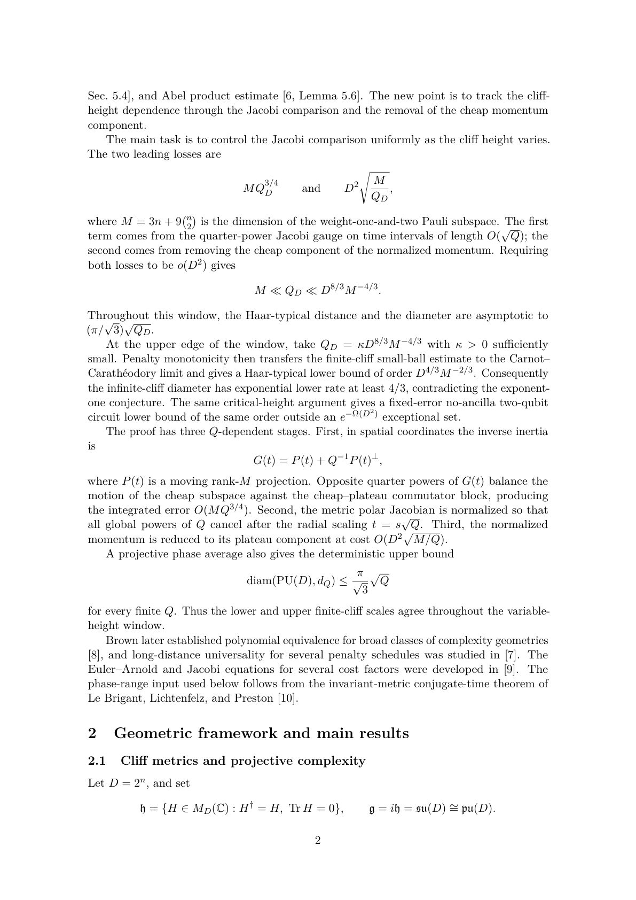
<figcaption class="paper-figure-caption"><b>Fig 1.</b> Low-resolution page preview, page 2</figcaption>
</figure>
<figure class="paper-figure-card">
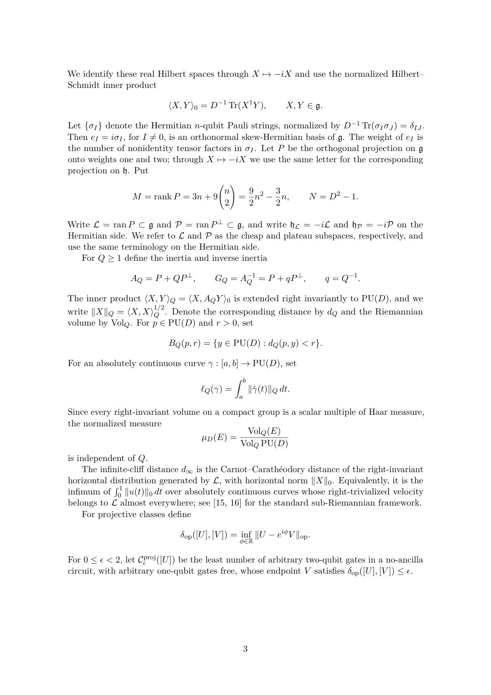
<figcaption class="paper-figure-caption"><b>Fig 2.</b> Low-resolution page preview, page 3</figcaption>
</figure>
<figure class="paper-figure-card">
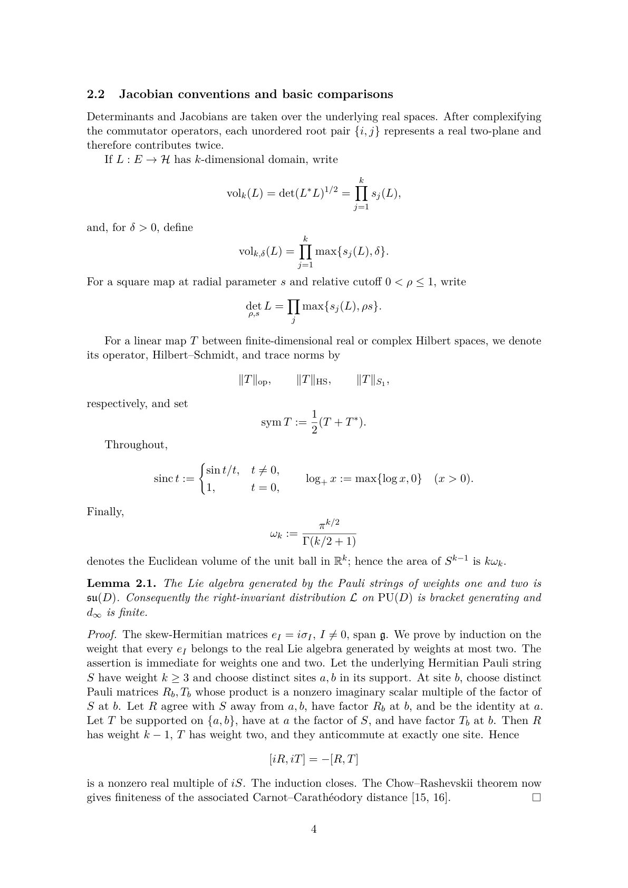
<figcaption class="paper-figure-caption"><b>Fig 3.</b> Low-resolution page preview, page 4</figcaption>
</figure>
<figure class="paper-figure-card">
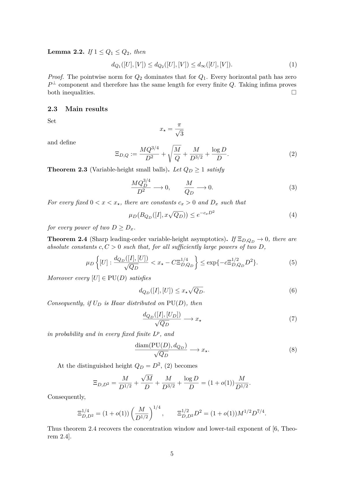
<figcaption class="paper-figure-caption"><b>Fig 4.</b> Low-resolution page preview, page 5</figcaption>
</figure>
<figure class="paper-figure-card">
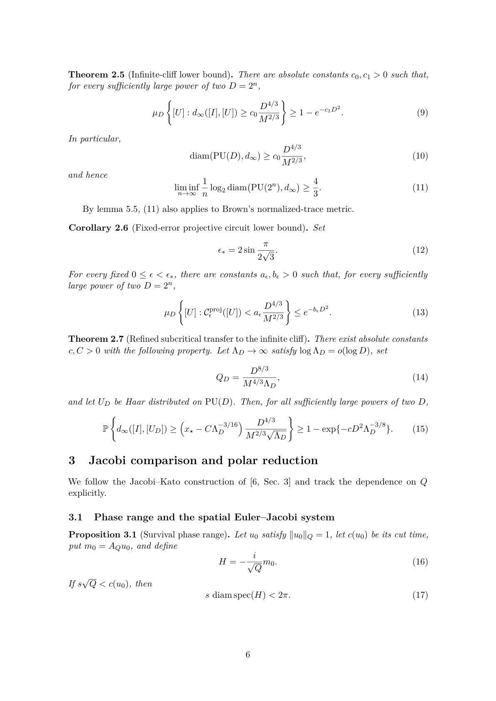
<figcaption class="paper-figure-caption"><b>Fig 5.</b> Low-resolution page preview, page 6</figcaption>
</figure>
</div>
<p><strong>Summary.</strong> This paper analyzes the geometric properties of the unitary group PU(D) using specialized 'cliff metrics' to study quantum circuit complexity. It derives a novel lower bound for the infinite-cliff diameter, showing it scales with an exponent of $4/3$. This result is significant because it disproves an existing conjecture (Brown's exponent-one conjecture) and provides a concrete lower bound for quantum circuit depth.</p>
<p><strong>Why it may be interesting.</strong> The work provides a significant theoretical lower bound on the complexity of quantum circuits, directly impacting the understanding of quantum computational limits by improving upon previous conjectures.</p>
<details>
<summary>Detailed structure</summary>
<p><strong>Main problem.</strong> The paper aims to establish lower bounds for the diameter of the unitary group PU(D) under various metrics, specifically comparing the 'infinite-cliff' distance to other bounds.</p>
<p><strong>Main result.</strong> It proves that the infinite-cliff diameter has a lower bound scaling of order $D^{4/3}M^{2/3}$, which disproves Brown's exponent-one conjecture and yields a corresponding lower bound for fixed-error quantum circuits.</p>
<p><strong>Method.</strong> The analysis employs advanced geometric techniques, including small-ball probability estimates on the Haar measure, Jacobi field comparisons, and Gaussian transfer techniques.</p>
<p><strong>Model / system.</strong> The system is the unitary group PU(D), representing quantum evolution, analyzed using right-invariant cliff metrics ($d_Q$) and the infinite-cliff distance ($d_\infty$). The complexity is related to $n$ qubits, where $D=2n$.</p>
<p><strong>Key observables.</strong> The normalized Haar measure of small balls ($\mu_D(B_{Q_D}([I],x\sqrt{Q_D}))$) and the diameter of the space ($  ext{diam}(  ext{PU}(D), d_\infty)$).</p>
<p><strong>Important parameters / regimes.</strong> The penalty parameter $Q$, the dimension $D=2n$, and the subspace dimension $M=3n+9inom{n}{2}$. The analysis is restricted to the window $M \ll Q \ll D^{8/3}M^{-4/3}$.</p>
<p><strong>Assumptions / limitations.</strong> The results hold outside an $e^{-\Omega(D^2)}$ exceptional set, and the derivation relies on specific asymptotic conditions on the parameters $Q$ and $M$.</p>
<p><strong>Paper structure.</strong> The paper progresses by first establishing small-ball estimates for the finite-cliff metric, then transferring these estimates to the infinite-cliff distance using comparison techniques, culminating in the derivation of the lower bound for the diameter that contradicts a known conjecture.</p>
</details>
<details>
<summary>Abstract</summary>
<p>Let $D=2^n$ and $M=3n+9\binom n2$. We study the right-invariant one-step-cliff metric $d_Q$ on $\operatorname{PU}(D)$, with unit penalty on Pauli weights one and two and penalty $Q$ on all higher weights. If $M/Q_D\to0$ and $MQ_D^{3/4}/D^2\to0$, then, for every fixed $0<x<π/\sqrt3$, \[   μ_D\bigl(B_{Q_D}([I],x\sqrt{Q_D})\bigr)\le e^{-c_xD^2}. \] Here $μ_D$ is normalized Haar measure. Thus the Haar-typical distance from the identity and the diameter are both asymptotic to $(π/\sqrt3)\sqrt{Q_D}$ throughout the window $M\ll Q_D\ll D^{8/3}M^{-4/3}$. Choosing $Q_D=κD^{8/3}M^{-4/3}$ with sufficiently small fixed $κ>0$ yields a Haar-typical lower bound of order $D^{4/3}M^{-2/3}$ for the corresponding infinite-cliff Carnot--Carathéodory distance, outside an $e^{-Ω(D^2)}$ exceptional set. The infinite-cliff diameter therefore has exponential lower rate at least $4/3$, disproving Brown's exponent-one conjecture. The same estimate gives a fixed-error no-ancilla two-qubit circuit lower bound of the same order.</p>
</details>
<p><sub><a href="#top">↑ back to top</a></sub></p>
</details>
<h2 id="secondary-cond-mat-archives">Secondary cond-mat archives</h2>
<p><em>Papers from cond-mat.mtrl-sci, mes-hall, other, soft, supr-con. These archives are de-prioritized — they appear at the end regardless of relevance score.</em></p>
<h3 id="relevant-in-secondary-archives-17">Relevant in secondary archives (17)</h3>

<p><a id="paper-2609.03833"></a></p>
<h3 id="unravelling-the-li-haldane-conjecture-with-the-projected-ensemble">⭐ <a href="http://arxiv.org/abs/2609.03833v1">Unravelling the Li-Haldane Conjecture with the Projected Ensemble</a></h3>
<p><strong>Highlighted author(s):</strong> Nigel R. Cooper<br>
<strong>Authors:</strong> Daniel Spasic-Mlacak, Qi Camm Huang, Wen Wei Ho, Nigel R. Cooper<br>
<strong>Type:</strong> theory · <strong>Category:</strong> strongly correlated electrons · <strong>PDF:</strong> <a href="https://arxiv.org/pdf/2609.03833v1">https://arxiv.org/pdf/2609.03833v1</a><br>
<strong>Analysis basis:</strong> full PDF text, analyzed in chunks
<strong>Topic relevance:</strong> 🔥 <code>quantum measurements</code> <strong>4/5</strong> · <code>Full counting statistics</code> <strong>1/5</strong></p>
<div class="figure-strip-hint">↔ Scroll figures horizontally</div>
<div class="paper-figures-scroll">
<figure class="paper-figure-card">
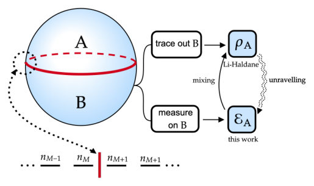
<figcaption class="paper-figure-caption"><b>Fig 1.</b> FIG. 1. Schematic diagram of our setup: the FQH system on a sphere is bipartitioned into subsystems A and B using an orbital cut, with the angular momentum ∆LA and particle number NA being fixed. By taking measurements on part of the subsystem, we construct the projected ensemble EA in the occupation number basis.</figcaption>
</figure>
<figure class="paper-figure-card">
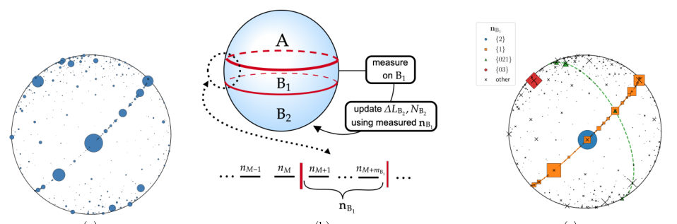
<figcaption class="paper-figure-caption"><b>Fig 2.</b> FIG. 2. (a) Full PE in the ∆LA = 2 sector of the ν = 1, N = 20 bosonic Moore–Read state. The states span a rank-3 Li– Haldane edge manifold and are represented on the disk, with antipodal identification on the boundary, corresponding to RP2. Point sizes are proportional to their PE probabilities. (b) Schematic of partitioning the measured subsystem into B = B1 ∪B2. Conditioning on the occupation configuration nB1 of the orbitals nearest the entanglement cut fixes the particle number and angular momentum remaining in B2, thereby defining an effective bipartition A|B2 and constraining the corresponding edge- state subspace of A. (c) Labelled version of a). Conditioning on nB1 = {1} or {021}...</figcaption>
</figure>
<figure class="paper-figure-card">
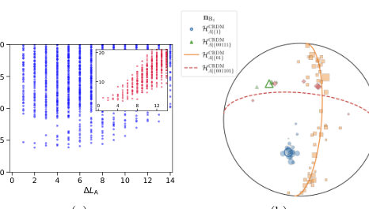
<figcaption class="paper-figure-caption"><b>Fig 3.</b> FIG. 3. (a) CRDM entanglement spectrum of the ν = 5/2, N = 16 Coulomb ground state, for nB1 = {1}. The low-lying sector exhibits the CFT counting predicted by Eq. (4) and is separated from the non-universal UV sector by an entangle- ment gap, analogous to the Li–Haldane structure of the full RDM. The corresponding low-lying eigenstates span the con- ditional edge subspace HCRDM A|nB1 . (The inset is the correspond- ing entanglement spectrum of the fermionic ν = 1/2 Moore- Read state) (b) PE of the ν = 5/2 Coulomb ground state, with the interaction projected to the second Landau level. The ensemble is projected onto the universal edge subspace of the full Coulomb RDM, and the corresponding...</figcaption>
</figure>
<figure class="paper-figure-card">
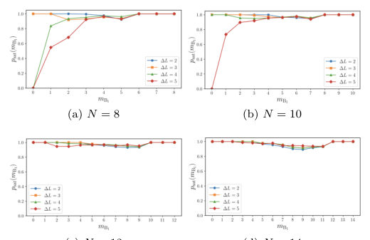
<figcaption class="paper-figure-caption"><b>Fig 4.</b> FIG. 4. Finite-size scaling of the saturation probabil- ity. Probability psat that the conditional rank saturates the CFT upper bound of Eq. (4), shown as a function of the num- ber of orbitals mB1 included in the measured subsystem B1 for Laughlin states with (a) N = 8, (b) N = 10, (c) N = 12, and (d) N = 14 particles. The saturation probability is ob- tained by summing the probabilities of all measurement out- comes nB1 for which rank[ρA|nB1 ] equals the corresponding conditional CFT counting. The point mB1 = 0 reduces to the conventional Li–Haldane problem and therefore has psat = 0 or 1 depending on whether the finite-size RDM saturates the usual CFT counting. The overall increase of...</figcaption>
</figure>
<figure class="paper-figure-card">
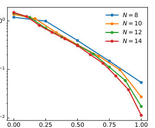
<figcaption class="paper-figure-caption"><b>Fig 5.</b> FIG. 5. Measurement-induced entanglement (MIE) shown for Laughlin states with N = 8, 10, 12, 14 particles overlaid and ∆LA = 3 fixed. Here, mB1 denotes the number of orbitals in B1, namely the number of measured orbitals within B, and mcutoff denotes the largest mB1 such that the projected states are not completely collapsed to pure states, i.e., the largest mB1 such that the MIE is non-zero. The plot shows an approximate collapse between different N and also exhibits an approximate exponential decay of MIE with respect to mB1, confirming our intuition based on rank collapse of the projected ensembles.</figcaption>
</figure>
</div>

<p><strong>Summary.</strong> This work develops the concept of the Projected Ensemble (PE) to probe topological order in FQH states beyond standard entanglement spectra. By analyzing states conditioned on measurement outcomes, the authors reveal a hidden, measurement-dependent hierarchy in the entanglement structure. This provides a sharp, new diagnostic tool confirming topological order even in realistic Coulomb-interacting systems.</p>
<p><strong>Why it may be interesting.</strong> The concept of 'unravelling' entanglement via measurement outcomes provides a powerful, non-equilibrium probe into the topological order of strongly correlated electron systems, offering diagnostics beyond standard ground-state entanglement measures.</p>
<details>
<summary>Detailed structure</summary>
<p><strong>Main problem.</strong> To uncover a finer universal structure within the entanglement spectra of fractional quantum Hall (FQH) states, going beyond what the standard entanglement spectrum can detect.</p>
<p><strong>Main result.</strong> The projected ensemble (PE) exhibits a hidden hierarchy, leading to a measurement-resolved Li-Haldane conjecture where conditional subspaces are governed by CFT counting.</p>
<p><strong>Method.</strong> The study analyzes the Projected Ensemble (PE), defined by conditioning quantum states on measurement outcomes of a subsystem's complement, which unravels the standard Reduced Density Matrix (RDM).</p>
<p><strong>Model / system.</strong> The focus is on Fractional Quantum Hall (FQH) states, specifically the non-Abelian Moore-Read state and the $
u=5/2$ Coulomb ground state, analyzed on a sphere bipartitioned into two subsystems.</p>
<p><strong>Key observables.</strong> Entanglement spectra, Projected Ensemble (PE), conditional reduced density matrices (CRDM), and the rank of the conditional subspaces.</p>
<p><strong>Important parameters / regimes.</strong> Filling factor ($
u$), measurement outcomes ($n_B$), and the topological sector (e.g., $\Delta_{LA}=2$).</p>
<p><strong>Assumptions / limitations.</strong> The analysis relies on the assumption that the relevant information for the rank is encoded in a subset of measured degrees of freedom, and that the structure persists under coherent deformations (rank rigidity).</p>
<p><strong>Figures summary.</strong> Figures illustrate the PE structure, showing rank collapse upon measurement conditioning, and compare the geometric organization of conditional subspaces between the idealized Moore-Read model and the realistic Coulomb ground state.</p>
<p><strong>Paper structure.</strong> The paper progresses from establishing the limitations of the standard entanglement spectrum to introducing the PE, formulating the measurement-resolved conjecture, demonstrating rank collapse, and finally showing that this structure persists for realistic Coulomb interactions.</p>
</details>
<details>
<summary>Abstract</summary>
<p>The entanglement spectra of fractional quantum Hall states contain universal fingerprints of their underlying topological order, as posited by the Li-Haldane conjecture. In this work, we uncover a finer universal structure within the entanglement spectra unravelled by projective measurements. Concretely, we study the projected ensemble of fractional quantum Hall states, defined as the collection of quantum states on a subsystem conditioned on measurement outcomes of its complement. We find that this ensemble exhibits a hidden hierarchy inside the Li-Haldane edge manifold: by conditioning on measurement outcomes, the entanglement spectrum's support is split into measurement-dependent sectors whose ranks we demonstrate are fixed by conformal field theory counting, an observation we dub the measurement-resolved Li-Haldane conjecture. For the non-Abelian Moore-Read state, this hierarchy is particularly rich: each parity-resolved edge manifold contains internal subspaces whose dimensions reproduce the conformal field theory counting of the opposite-parity sector. This structure persists even in realistic Coulomb-interacting ground states, establishing the projected ensemble as a sharp new probe of topological order beyond what the entanglement spectrum alone can detect.</p>
</details>
<p><sub><a href="#top">↑ back to top</a></sub></p>

<p><a id="paper-2609.03765"></a></p>
<h3 id="coherent-interaction-of-wsmath970math-and-quasi-2d-perovskite-excitons-over-micrometer-distances-via-a-cavity-field"><a href="http://arxiv.org/abs/2609.03765v1">Coherent interaction of WS$_2$ and quasi-2D perovskite excitons over micrometer distances via a cavity field</a></h3>
<p><strong>Authors:</strong> Marti Struve, Hamid Pashaei Adl, Jamie M. Fitzgerald, Oliwia Janikowska, Maciej Śmiertka, Alessandro Surrente, Sven Stephan, Christoph Lienau, Falk Eilenberger, Zdeněk Sofer, Watcharaphol Paritmongkol, William A. Tisdale, Paulina Plochocka, Ermin Malic, Christian Schneider, Martin Esmann<br>
<strong>Type:</strong> both · <strong>Category:</strong> other · <strong>PDF:</strong> <a href="https://arxiv.org/pdf/2609.03765v1">https://arxiv.org/pdf/2609.03765v1</a><br>
<strong>Analysis basis:</strong> full PDF text, analyzed in chunks
<strong>Topic relevance:</strong> 🔥 <code>quantum optics experiment</code> <strong>4/5</strong> · <code>Tavis-Cummings &amp; cavity-many-emitter</code> <strong>3/5</strong> · <code>analog quantum simulation</code> <strong>3/5</strong> · <code>driven-dissipative phase transition</code> <strong>2/5</strong> · <code>interference shaping light</code> <strong>2/5</strong> · <code>Keldysh / 2PI / non-Gaussian methods</code> <strong>1/5</strong> · <code>correlated / nonlocal dissipation</code> <strong>1/5</strong> · <code>methods for driven-dissipative</code> <strong>1/5</strong></p>
<div class="figure-strip-hint">↔ Scroll figures horizontally</div>
<div class="paper-figures-scroll">
<figure class="paper-figure-card">

<figcaption class="paper-figure-caption"><b>Fig 1.</b> Figure 1: Open cavity hosting a TMD and quasi-2D HaP and individual demonstration of the strong coupling conditions for both materials. A) An open cavity formed by one distributed Bragg reflector (DBR) and a gold mirror. Separate nanopositioner stages allow for precise control of the air gap and x-y-orientation. The bottom mirror contains a fully hBN-encapsulated 110-nm-thick n=4 quasi-2D halide perovskite (HaP) flake. To lift the WS2 monolayer -crystal into a field maximum in front of the gold-coated top mirror, a 45-nm-thick hBN spacer is used. B) and C) White-light reflectivity at normal incidence as a functionof the cavity air gap for the individual quasi-2D halide perovskite (B) and...</figcaption>
</figure>
<figure class="paper-figure-card">
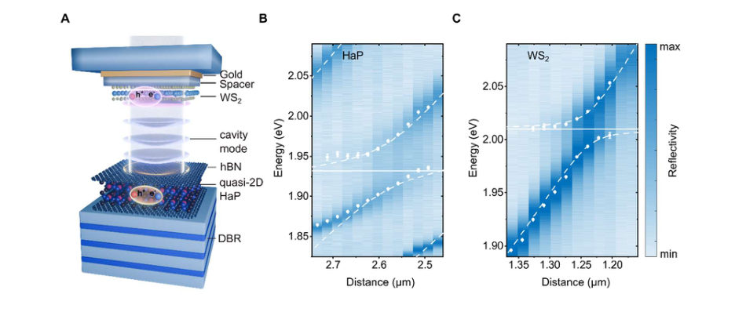
<figcaption class="paper-figure-caption"><b>Fig 2.</b> Fig. 1A shows the structure of the fully assembled experimental setup. The bottom mirror consists of 10 alternating quarter-wave pairs of SiO2 and TiO2, terminated with an additional SiO2 layer, forming a distributed Bragg reflector (DBR). We transferred a fully hBN encapsulated ~110-</figcaption>
</figure>
<figure class="paper-figure-card">
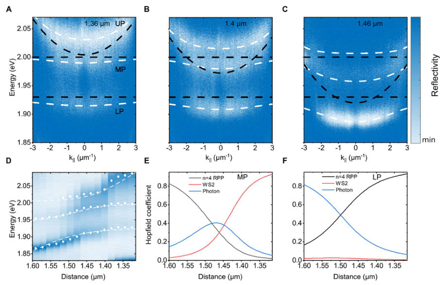
<figcaption class="paper-figure-caption"><b>Fig 3.</b> Figure 2: Strong coupling and Hopfield coefficients in the hybrid TMD and quasi-2D HaP structure. A) – C) Angle- resolved white-light reflectivity spectra of the quasi-2D HaP flake together with the 𝑊𝑆ଶ monolayer crystal for three selected air gap sizes of 1.36 µm (A), 1.4 µm (B) and 1.46 µm (C), indicated at the top of each panel. A single cavity resonance couples to the two excitons (marked with black dotted lines) leading to the development of a lower (LP), a middle (MP) and an upper polariton (UP) branch. The reflectivity spectra are overlaid with a coupled oscillator model (dashed white lines) with coupling strengths 𝑔ு௔௉= 36 meV and 𝑔ௐௌଶ=20 meV. D) Air gap-dependent white- light...</figcaption>
</figure>
<figure class="paper-figure-card">
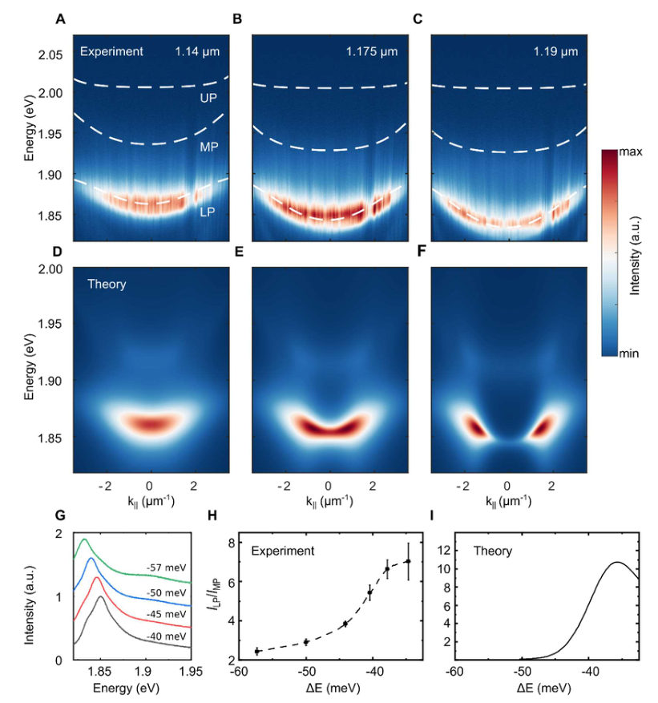
<figcaption class="paper-figure-caption"><b>Fig 4.</b> Figure 3: Experimentally measured and simulated angle resolved photoluminescence. A) –C) Angle resolved photoluminescence (PL) spectra under 532 nm CW excitation for air gaps of 1.14 µm (A), 1.175 µm (B) and 1.19 µm (C), indicated at the top of each panel. The dashed lines show a coupled oscillator model superimposed with the spectra. At 𝑘||=2.5 µm-1 the dispersion of the lower polariton branch features an inflection point. For strong red detuning (C) the PL intensity redistributes towards larger in-plane k-vectors indicative of a polariton bottleneck behavior. D)-F) Simulated angle-resolved PL using a microscopic Wannier-Hopfield model. An increase of the PL for higher in-plane k-vectors...</figcaption>
</figure>
<figure class="paper-figure-card">
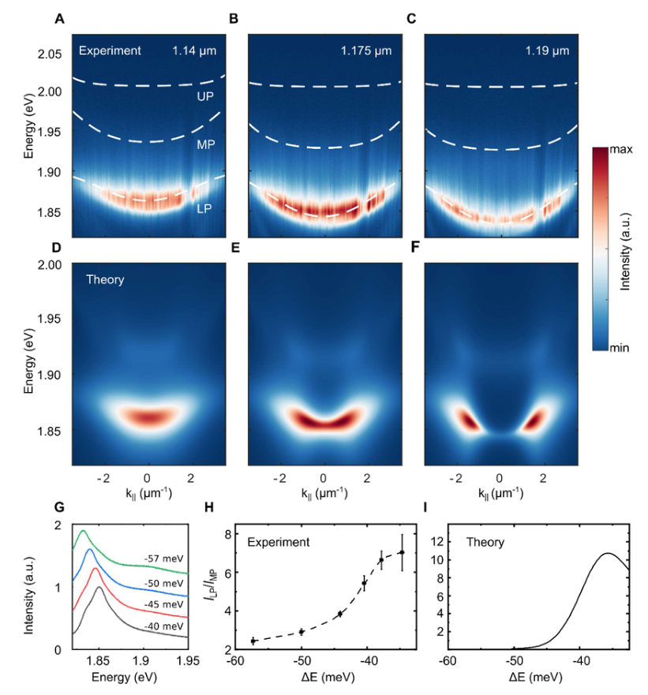
<figcaption class="paper-figure-caption"><b>Fig 5.</b> Fig. 3A – C show angle-resolved photoluminescence (PL) spectra of the hybrid polariton. We excite the system with a green 532 nm continuous wave laser (excitation power 280 µW, spot size of 5 µm). Under these excitation conditions the we do not observe any photo induced degradation</figcaption>
</figure>
</div>

<p><strong>Summary.</strong> This paper reports on the coherent coupling of excitons from $ ext{WS}_2$ and quasi-2D perovskites mediated by a cavity photon mode across a micrometer gap. By combining advanced optical measurements with coupled oscillator theory, the authors confirm the formation of hybrid polaritons. This work establishes a platform for engineering novel light-matter functionalities in 2D materials.</p>
<p><strong>Why it may be interesting.</strong> This work is highly relevant to AMO physics and quantum optics as it explores engineered light-matter interactions (polaritons) in solid-state systems, demonstrating coherent coupling over distances that typically suppress such interactions.</p>
<details>
<summary>Detailed structure</summary>
<p><strong>Main problem.</strong> The research aims to demonstrate and characterize the coherent coupling between excitons from two distinct, spatially separated 2D materials ($   ext{WS}_2$ and quasi-2D perovskites) mediated by a single cavity photon mode.</p>
<p><strong>Main result.</strong> The study successfully demonstrated the formation of three polariton branches, confirming coherent, photon-mediated interaction between the two excitonic systems over a micrometer separation distance.</p>
<p><strong>Method.</strong> The work combines experimental measurements (white-light reflectivity and photoluminescence) with theoretical modeling using coupled harmonic oscillator and Wannier-Hopfield frameworks.</p>
<p><strong>Model / system.</strong> The physical system is a hybrid heterostructure comprising a $  ext{WS}_2$ monolayer and a quasi-2D halide perovskite ($    ext{HaP}$) placed within an open optical microcavity. The system dynamics are modeled using coupled oscillator Hamiltonians.</p>
<p><strong>Key observables.</strong> Polariton energy branches, coupling strengths ($g$), Hopfield coefficients, white-light reflectivity spectra, and photoluminescence (PL) intensity.</p>
<p><strong>Important parameters / regimes.</strong> Separation distance ($\sim 1.5 \ \mu	ext{m}$), coupling strengths ($g_{	ext{WS}_2} \approx 16-20 	ext{ meV}$, $g_{	ext{HaP}} \approx 36 	ext{ meV}$), and cavity detuning.</p>
<p><strong>Assumptions / limitations.</strong> The analysis relies on treating the system as a coupled set of harmonic oscillators and utilizes approximations like the Born-Markov approximation for scattering rates.</p>
<p><strong>Figures summary.</strong> Figures illustrate the physical setup involving DBR mirrors and transferred 2D materials, showing cavity tuning series data for the hybridized polariton and PL spectra for pure and mixed systems.</p>
<p><strong>Paper structure.</strong> The paper progresses from establishing the physical setup and initial single-material coupling confirmations to analyzing the coupled three-oscillator Hamiltonian, and finally detailing the measurement of tunable polariton characteristics and scattering rates.</p>
</details>
<details>
<summary>Abstract</summary>
<p>The coherent coupling of cavity-confined photons and excitonic matter resonances leads to the formation of cavity polaritons, hybrid light-matter quasi-particles. If multiple exciton resonances couple to the same photonic mode, the resulting polariton constitutes a coherent interaction between matter resonances that can be spatially separated without any direct electronic coupling. In this work, we demonstrate the formation of such a coherent coupling at room temperature using an open optical cavity containing two distinct van der Waals materials - monolayer WS2 and layered quasi-2D halide perovskites (HaPs) - separated by $1.5 μ\rm m$. The system forms three polariton branches, with the middle branch possessing nearly equal fractions of both excitons and the photonic mode. White-light reflectivity and luminescence measurements are in good agreement with simulations using a coupled harmonic oscillator and a microscopic Wannier-Hopfield framework. Our results lay the foundation to combine highly complementary degrees of freedom in 2D materials in an in-situ tunable fashion to enable new polaritonic functionalities.</p>
</details>
<p><sub><a href="#top">↑ back to top</a></sub></p>

<p><a id="paper-2609.03752"></a></p>
<h3 id="real-space-floquet-topology-written-by-the-orbital-angular-momentum-of-light"><a href="http://arxiv.org/abs/2609.03752v1">Real-space Floquet topology written by the orbital angular momentum of light</a></h3>
<p><strong>Authors:</strong> Mohammad Shafiei, Milorad V. Milošević<br>
<strong>Type:</strong> theory · <strong>Category:</strong> other · <strong>PDF:</strong> <a href="https://arxiv.org/pdf/2609.03752v1">https://arxiv.org/pdf/2609.03752v1</a><br>
<strong>Analysis basis:</strong> full PDF text, analyzed in chunks
<strong>Topic relevance:</strong> <code>analog quantum simulation</code> <strong>3/5</strong> · <code>driven-dissipative phase transition</code> <strong>3/5</strong> · <code>interference shaping light</code> <strong>3/5</strong> · <code>Keldysh / 2PI / non-Gaussian methods</code> <strong>2/5</strong> · <code>methods for driven-dissipative</code> <strong>2/5</strong> · <code>non-equilibrium universality</code> <strong>2/5</strong></p>
<div class="figure-strip-hint">↔ Scroll figures horizontally</div>
<div class="paper-figures-scroll">
<figure class="paper-figure-card">
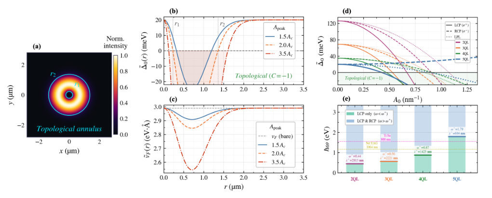
<figcaption class="paper-figure-caption"><b>Fig 1.</b> FIG. 1. Floquet mass engineering by circularly polarized Laguerre–Gaussian light. (a) Schematic of an ℓ= 1 optical vortex incident on a quasi-two-dimensional Bi2Se3 film. The annular intensity profile drives mass inversion only where the local field is large enough, producing a topological annulus bounded by the zero-mass contour ˜∆0(r) = 0 (cyan). (b) Radial LCP mass profiles for a 5 QL film at ℏω = 1.5 eV and w = 1 µm, showing the two domain walls r1 and r2. (c) Corresponding spatial renormalization of the Fermi velocity. (d) Uniform-drive mass renormalization for LCP, RCP, and LPL fields. For a 5 QL film, LCP closes the gap while RCP increases it at ℏω = 1.5 eV. (e) Thickness dependence...</figcaption>
</figure>
<figure class="paper-figure-card">
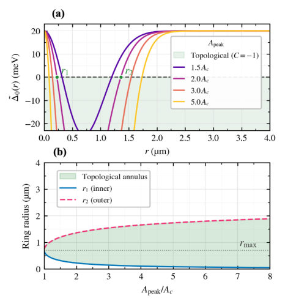
<figcaption class="paper-figure-caption"><b>Fig 2.</b> FIG. 2. Formation and expansion of the Floquet topological annulus. (a) Radial mass profiles for a 5 QL film driven by an LCP LG beam with ℓ= 1, w = 1 µm, and ℏω = 1.5 eV. The shaded region denotes the inverted-mass annulus. (b) Inner and outer domain-wall radii as functions of Apeak/Ac; the dotted line marks the optical-intensity maximum rmax = w/ √</figcaption>
</figure>
<figure class="paper-figure-card">
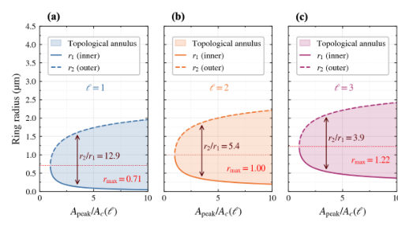
<figcaption class="paper-figure-caption"><b>Fig 3.</b> FIG. 3. OAM control of the topological annulus. Inner (r1, solid) and outer (r2, dashed) domain-wall radii are shown versus Apeak/Ac(ℓ) for ℓ= 1, 2, 3 in a 5 QL film at ℏω = 1.5 eV and w = 1 µm. The dotted curves mark rmax = w p</figcaption>
</figure>
<figure class="paper-figure-card">
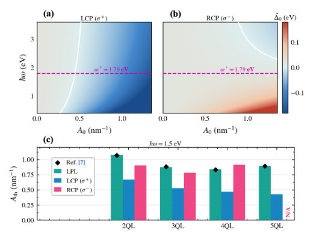
<figcaption class="paper-figure-caption"><b>Fig 4.</b> FIG. 4. Helicity-selective Floquet phase diagrams. (a) LCP phase diagram of a 5 QL film in the (A0, ℏω) plane. Blue and red indicate topological (C = −1) and trivial (C = 0) regions, respectively; the white contour is ˜∆0 = 0, and the dashed line marks ω∗. (b) RCP phase diagram. No topological phase oc- curs below ℏω∗= 1.79 eV. (c) Critical amplitudes for LPL [7], LCP, and RCP illumination at ℏω = 1.5 eV. For 5 QL, RCP has no transition at this frequency.</figcaption>
</figure>
</div>

<p><strong>Summary.</strong> This paper demonstrates that using structured light with Orbital Angular Momentum (OAM) allows for the direct, real-space writing of topological features in quantum materials like topological insulators. The topology forms a controllable annulus whose existence and geometry are independently tuned by the light's OAM number and helicity. This establishes OAM as a powerful control parameter for programmable topological landscapes.</p>
<p><strong>Why it may be interesting.</strong> This work provides a concrete, optically controllable mechanism for engineering non-equilibrium topology in condensed matter systems, which is highly relevant for understanding light-matter interactions in topological materials.</p>
<details>
<summary>Detailed structure</summary>
<p><strong>Main problem.</strong> To demonstrate that structured light carrying Orbital Angular Momentum (OAM) can write topological properties directly into real space within a material, moving beyond global control mechanisms.</p>
<p><strong>Main result.</strong> The study shows that OAM enables the formation of a topological annulus in ultrathin topological insulators, with the topology being controllable by the light's helicity and OAM number.</p>
<p><strong>Method.</strong> The analysis uses the leading Floquet–Magnus term to derive an effective Hamiltonian for a Dirac system driven by a circularly polarized Laguerre–Gaussian beam.</p>
<p><strong>Model / system.</strong> The system is modeled using quasi-two-dimensional Dirac systems realized in ultrathin Bi2Se3 films, driven by a time- and space-dependent optical field characterized by OAM ($\ell$) and circular polarization ($\hat{\epsilon}$).</p>
<p><strong>Key observables.</strong> Topological annulus (defined by two concentric chiral ring modes), radial Floquet mass sign changes, and vortex-core zero modes.</p>
<p><strong>Important parameters / regimes.</strong> Orbital Angular Momentum quantum number ($\ell$), light helicity ($\hat{\epsilon}$), and the ratio of peak optical amplitude to critical amplitude ($A_{	ext{peak}}/A_c$).</p>
<p><strong>Assumptions / limitations.</strong> The analysis relies on the off-resonant regime approximation ($\omega \gg \Delta_0$) and the use of the leading Floquet–Magnus term.</p>
<p><strong>Figures summary.</strong> Figures illustrate the formation and expansion of the topological annulus for different OAM values ($\ell$), show the dependence of the inner and outer ring radii on the driving field strength, and summarize the helicity-selective crossover frequencies.</p>
<p><strong>Paper structure.</strong> The paper establishes the theoretical framework using the Floquet-Magnus expansion, analyzes the role of helicity in driving mass inversion versus gap opening, and then demonstrates how OAM independently controls the geometry of the resulting topological annulus.</p>
</details>
<details>
<summary>Abstract</summary>
<p>Floquet engineering usually treats light as a uniform control field that changes the topology of an entire driven material. Here we show that structured light carrying orbital angular momentum (OAM) enables a different regime, in which topology is written directly in real space. For ultrathin topological insulator films, circularly polarized Laguerre--Gaussian beams generate a radial Floquet mass whose sign changes define a topological annulus bounded by two concentric chiral ring modes. The transition is helicity selective: below a thickness-dependent critical frequency, left-circularly polarized light drives mass inversion, whereas right-circularly polarized light increases the gap and leaves the film trivial. Independently, the OAM quantum number shifts and reshapes the annulus without changing the frequency, intensity, or helicity. In the decoupled-surfaces limit, the same mechanism produces a purely Floquet-induced topological mass and a vortex-core zero mode. These results identify photon OAM as a control parameter for nonequilibrium topology and provide a route to programmable topological landscapes in quantum materials.</p>
</details>
<p><sub><a href="#top">↑ back to top</a></sub></p>

<p><a id="paper-2609.03173"></a></p>
<h3 id="topological-boundary-states-and-the-edge-chain-in-semi-infinite-two-dimensional-insulators"><a href="http://arxiv.org/abs/2609.03173v1">Topological Boundary States and the Edge Chain in Semi-Infinite Two-Dimensional Insulators</a></h3>
<p><strong>Authors:</strong> Ilya Iakoub, Nicolas Levasseur, Richard MacKenzie<br>
<strong>Type:</strong> theory · <strong>Category:</strong> other · <strong>PDF:</strong> <a href="https://arxiv.org/pdf/2609.03173v1">https://arxiv.org/pdf/2609.03173v1</a><br>
<strong>Analysis basis:</strong> full PDF text, analyzed in chunks
<strong>Topic relevance:</strong> <code>analog quantum simulation</code> <strong>3/5</strong> · <code>methods for driven-dissipative</code> <strong>3/5</strong> · <code>Frenkel-Kontorova</code> <strong>2/5</strong> · <code>driven-dissipative phase transition</code> <strong>2/5</strong> · <code>non-equilibrium universality</code> <strong>2/5</strong> · <code>Keldysh / 2PI / non-Gaussian methods</code> <strong>1/5</strong></p>
<div class="figure-strip-hint">↔ Scroll figures horizontally</div>
<div class="paper-figures-scroll">
<figure class="paper-figure-card">
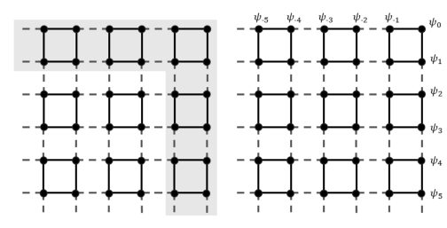
<figcaption class="paper-figure-caption"><b>Fig 1.</b> FIG. 1: 2D extension of the SSH model. The full lines are t1 hoppings, the dashed lines are t2 hoppings. In the shaded area, you have the unit cell we use. On the right, we show the labeling of the edge chain sites.</figcaption>
</figure>
<figure class="paper-figure-card">
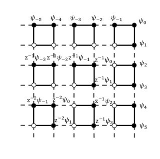
<figcaption class="paper-figure-caption"><b>Fig 2.</b> FIG. 2: To enforce the edge chain ansatz, we set every second “chain” to zero. The resulting wave function is shown above. The white circles represent sites where the wave function amplitude is zero.</figcaption>
</figure>
<figure class="paper-figure-card">
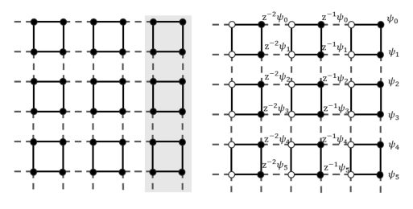
<figcaption class="paper-figure-caption"><b>Fig 3.</b> FIG. 3: The 2D SSH model with another unit cell, identified by a shaded area in the image on the left. On the right, we show the corresponding ansatz. The white circles represent sites where the wave function amplitude is zero.</figcaption>
</figure>
<figure class="paper-figure-card">
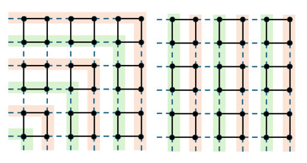
<figcaption class="paper-figure-caption"><b>Fig 4.</b> FIG. 4: (Color online). In orange: sites with amplitude ψi; in green sites with amplitude ψb. When a Bloch state satisfies the boundary condition, ψb = 0. On the left: the ψi and ψb for the unit cell in Fig. 1; on the right: for the unit cell in Fig. 3.</figcaption>
</figure>
<figure class="paper-figure-card">
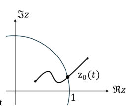
<figcaption class="paper-figure-caption"><b>Fig 5.</b> FIG. 5: A possible trajectory of the point z0, where an eigenstate of h2(z) is shared with h1(z), generated by the transformations U(z, t). If the shared state happens to arise at an exceptional point of h2(z), there will be a band crossing along z0(t), which translates into a gap closing when |z0(t)| = 1.</figcaption>
</figure>
</div>

<p><strong>Summary.</strong> This paper introduces a powerful 'edge chain' method to calculate the topologically protected edge and corner states in 2D topological insulators. By treating the boundary layer independently, the authors demonstrate that these states can be found using advanced mathematical tools applied to the analytically continued Bloch Hamiltonian. This provides a systematic approach for analyzing boundary physics in complex quantum materials.</p>
<p><strong>Why it may be interesting.</strong> The rigorous mathematical framework developed for finding boundary states in non-Hermitian, quasi-periodic systems is highly relevant to understanding topological phases in open quantum systems or engineered photonic/acoustic lattices.</p>
<details>
<summary>Detailed structure</summary>
<p><strong>Main problem.</strong> The paper aims to determine the adiabatically protected edge and corner states in semi-infinite, two-dimensional topological insulators.</p>
<p><strong>Main result.</strong> A novel 'edge chain' method is proposed, which successfully computes these boundary states by analyzing only the first layer of lattice sites, and the protection of these states is confirmed using Shemesh's theorem.</p>
<p><strong>Method.</strong> The method involves analytically continuing the Bloch Hamiltonian to the complex plane, treating the boundary as an independent 'edge chain,' and applying conditions derived from the bulk structure.</p>
<p><strong>Model / system.</strong> The study focuses on semi-infinite 2D topological insulators, using extensions of the Su-Schrieffer-Heeger (SSH) model, the Haldane model, and the Breathing Kagome Lattice as explicit examples.</p>
<p><strong>Key observables.</strong> Edge and corner state wave functions, energy eigenvalues, and the dimension of the kernel space defining the boundary states.</p>
<p><strong>Important parameters / regimes.</strong> Chiral symmetry, the complex wave number $z$, and the hopping parameters ($t_1, t_2, t_3$) defining the lattice structure.</p>
<p><strong>Assumptions / limitations.</strong> The core assumption is that edge states can be found by considering only the first layer ('edge chain') independently of the bulk, and that the connecting sites can be set to zero amplitude.</p>
<p><strong>Figures summary.</strong> Figures illustrate the 2D SSH model, labeling the 'edge chain' sites, and show visualizations of the model with alternative unit cells used to find different types of boundary states.</p>
<p><strong>Paper structure.</strong> The paper builds from establishing the edge chain ansatz, using Shemesh's theorem to prove protection, and then applying this framework to specific models (SSH3, Haldane, Kagome) using advanced techniques like para-Hermiticity and analyzing exceptional points.</p>
</details>
<details>
<summary>Abstract</summary>
<p>We show that it is possible to compute the adiabatically protected edge and corner states of semi-infinite, two-dimensional, topological insulators by considering the first layer of lattice sites, what we call the "edge chain," independently from the bulk. We start by accepting this claim as an ansatz, then, using the Shemesh theorem, we show that the edge states one finds using our procedure are adiabatically protected, provided we restrict ourselves to adiabatic evolutions that do not break chiral symmetry. We show explicit examples of our method in a 2D extension of the SSH model, the SSH3 model, the Haldane model and the Breathing Kagome Lattice.</p>
</details>
<p><sub><a href="#top">↑ back to top</a></sub></p>

<p><a id="paper-2609.03548"></a></p>
<h3 id="magnetic-couplings-in-half-filled-bipartite-graphs"><a href="http://arxiv.org/abs/2609.03548v1">Magnetic Couplings in Half-Filled Bipartite Graphs</a></h3>
<p><strong>Authors:</strong> Georges Bouzerar<br>
<strong>Type:</strong> theory · <strong>Category:</strong> other · <strong>PDF:</strong> <a href="https://arxiv.org/pdf/2609.03548v1">https://arxiv.org/pdf/2609.03548v1</a><br>
<strong>Analysis basis:</strong> full PDF text, analyzed in chunks
<strong>Topic relevance:</strong> <code>Keldysh / 2PI / non-Gaussian methods</code> <strong>3/5</strong> · <code>analog quantum simulation</code> <strong>2/5</strong> · <code>methods for driven-dissipative</code> <strong>2/5</strong></p>
<div class="figure-strip-hint">↔ Scroll figures horizontally</div>
<div class="paper-figures-scroll">
<figure class="paper-figure-card">
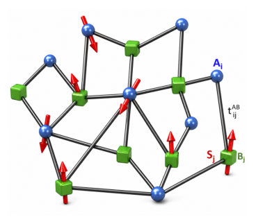
<figcaption class="paper-figure-caption"><b>Fig 1.</b> Figure 1. Illustration of a magnetic bipartite graph. The green (respectively blue) symbols correspond to Bj with j = 1, .., ΛB (respectively Ai with i = 1, .., ΛA) and the dark lines to the hoppings tAB ij . The red arrows are the localized spins.</figcaption>
</figure>
<figure class="paper-figure-card">
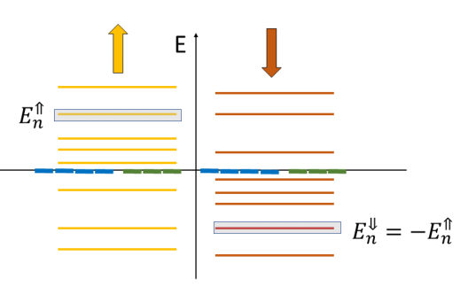
<figcaption class="paper-figure-caption"><b>Fig 2.</b> Figure 2. The spectrum of ˆH↑and ˆH↓. The ZEMs are de- picted in blue (respectively green) for those having a support on sublattice A only (respectively on B only). The ZEMs have zero weight at the sites occupied by magnetic impuri- ties. To each eigenstate of energy E↑ n in ↑sector corresponds an eigenstate of energy E↓ n = −E↑ n in the ↑sector.</figcaption>
</figure>
<figure class="paper-figure-card">
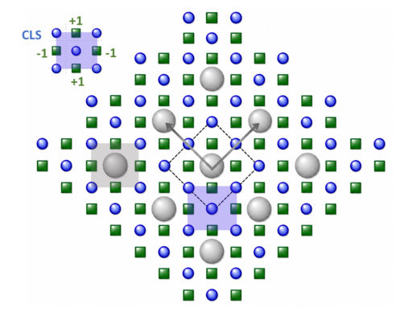
<figcaption class="paper-figure-caption"><b>Fig 3.</b> Figure 3. The depleted 1/8 square lattice. The unit cell (7 orbitals/cell) is indicated by the square with dashed lines and the removed sites of the square lattice (A-type) by the filled grey circles. Small filled blue circles correspond to or- bitals of sublattice A, and the filled green squares to orbitals of sublattice B. The system contains two distinct plaquette configurations: gray squares centered on a vacancy and blue squares centered on a type-A atom. In the nearest-neighbor hopping case, the typical compact localized state (CLS) is lo- calized within the latter configuration, sustaining a non-zero quantum amplitude solely on the four B orbitals of the blue plaquette.</figcaption>
</figure>
<figure class="paper-figure-card">
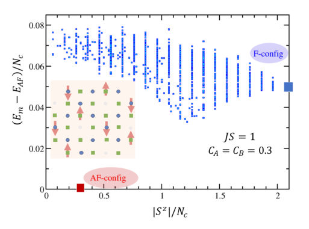
<figcaption class="paper-figure-caption"><b>Fig 4.</b> Figure 4. For a given set of positions of the magnetic im- purities, the energy difference (per cell), (Em −EAF )/Nc is plotted as a function of the total spin (per cell) of the mag- netic configuration ’m’. The large blue square corresponds to the fully polarized spin texture (F) and the small blue squares correspond to random configurations. The values of cA, cB, and JS are indicated in the figure.</figcaption>
</figure>
<figure class="paper-figure-card">
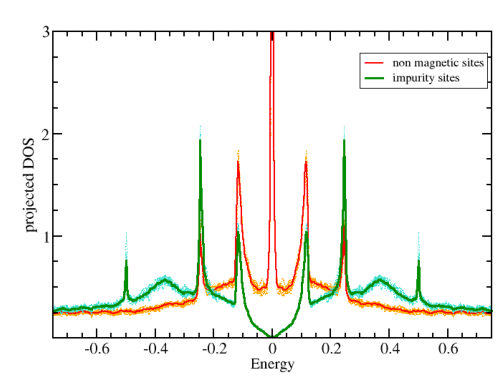
<figcaption class="paper-figure-caption"><b>Fig 5.</b> Figure 5. Averaged Projected density of states (arbitrary unit) on impurity sites and on non magnetic sites as a func- tion of the energy for the AF spin texture. The orange dots and cyan ones correspond to different configuration of disor- der (random position of the magnetic impurities). The red (projection on non magnetic sites) and green (projection on magnetic sites) continuous lines are the average over these set of configurations.</figcaption>
</figure>
</div>

<p><strong>Summary.</strong> This work develops a non-perturbative theory to calculate magnetic exchange couplings in half-filled bipartite magnetic lattices. By utilizing the Magnetic Force Theorem and circumventing issues related to zero-energy modes, the authors provide a universal analytical tool. This tool offers key design principles for engineering stable magnetic order in advanced 2D spintronic materials.</p>
<p><strong>Why it may be interesting.</strong> The development of a non-perturbative, universal framework for calculating magnetic exchange interactions in complex lattices is highly relevant for designing next-generation spintronic devices where precise control over long-range magnetic order is required.</p>
<details>
<summary>Detailed structure</summary>
<p><strong>Main problem.</strong> To establish a non-perturbative generalization of magnetic exchange rules in half-filled bipartite networks, overcoming the limitations of traditional perturbative frameworks.</p>
<p><strong>Main result.</strong> The derived non-perturbative formula for magnetic coupling is universal, valid for any bipartite graph, and successfully bypasses the problematic zero-energy mode (ZEM) calculations.</p>
<p><strong>Method.</strong> The magnetic coupling is calculated using the Magnetic Force Theorem (MFT) and Green's functions, leading to a generalized, non-perturbative expression involving frequency integrals.</p>
<p><strong>Model / system.</strong> The system is a magnetic bipartite graph (MBG) modeled by a Hamiltonian incorporating hopping terms ($t_{AB}$) and local Heisenberg exchange interactions ($J$). The analysis focuses on half-filled systems with localized magnetic moments on two sublattices (A and B).</p>
<p><strong>Key observables.</strong> Magnetic couplings $J_{\lambda\lambda'}(R)$, generalized susceptibility $\chi_{\lambda\lambda'}^{ij}(\omega)$, and the existence/weight of Zero-Energy Modes (ZEMs).</p>
<p><strong>Important parameters / regimes.</strong> Half-filling ($\Lambda$), the coupling strength $J_S$, and the lattice geometry (bipartite structure).</p>
<p><strong>Assumptions / limitations.</strong> The analysis assumes a ferrimagnetic ground state spin texture ($\mathbf{S}_A = +S e_z$, $\mathbf{S}_B = -S e_z$) and relies on the fact that ZEMs have zero weight at magnetic impurity sites.</p>
<p><strong>Figures summary.</strong> Figures illustrate the magnetic bipartite graph structure, the energy spectrum showing ZEMs, and the calculated magnetic couplings as a function of distance R, distinguishing between intra-sublattice (ferro) and inter-sublattice (antiferro) interactions.</p>
<p><strong>Paper structure.</strong> The paper progresses by first defining the Hamiltonian and identifying the failure points of perturbative methods related to ZEMs. It then derives the non-perturbative coupling formula using MFT and Green's functions, culminating in the general proof for arbitrary bipartite graphs.</p>
</details>
<details>
<summary>Abstract</summary>
<p>We break from perturbative frameworks to establish a non-perturbative generalization of magnetic exchange rules in half-filled bipartite networks. While historical models remain strictly tied to the debatable perturbation approach in the dilute limit and require the absence of zero-energy modes, our universal mechanism governs exchange interactions across arbitrary bipartite graphs. By bypassing traditional expansion bottlenecks, this framework provides an analytical predictive tool for magnetism in complex lattices, offering key design principles to engineer stable, long-range order in next-generation 2D spintronic devices</p>
</details>
<p><sub><a href="#top">↑ back to top</a></sub></p>

<p><a id="paper-2609.03679"></a></p>
<h3 id="weak-coupling-theory-of-half-metals-and-other-fractional-metallic-phases-in-biased-doped-bernal-bilayer-graphene"><a href="http://arxiv.org/abs/2609.03679v1">Weak-coupling theory of half-metals and other fractional metallic phases in biased doped Bernal bilayer graphene</a></h3>
<p><strong>Authors:</strong> D. V. Zhitov, A. V. Rozhkov, A. O. Sboychakov, A. L. Rakhmanov<br>
<strong>Type:</strong> theory · <strong>Category:</strong> strongly correlated electrons · <strong>PDF:</strong> <a href="https://arxiv.org/pdf/2609.03679v1">https://arxiv.org/pdf/2609.03679v1</a><br>
<strong>Analysis basis:</strong> full PDF text, analyzed in chunks
<strong>Topic relevance:</strong> <code>Keldysh / 2PI / non-Gaussian methods</code> <strong>3/5</strong> · <code>analog quantum simulation</code> <strong>2/5</strong> · <code>methods for driven-dissipative</code> <strong>2/5</strong></p>
<div class="figure-strip-hint">↔ Scroll figures horizontally</div>
<div class="paper-figures-scroll">
<figure class="paper-figure-card">
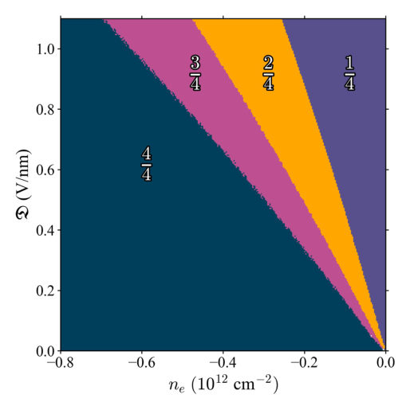
<figcaption class="paper-figure-caption"><b>Fig 1.</b> FIG. 1. Phase diagram of AB-stacked bilayer graphene within the experimentally accessible range: the labeled phases are (from right to left) quarter-metal, half-metal, three quarter- metal, and metal. The phases are separated by first-order transitions.</figcaption>
</figure>
<figure class="paper-figure-card">
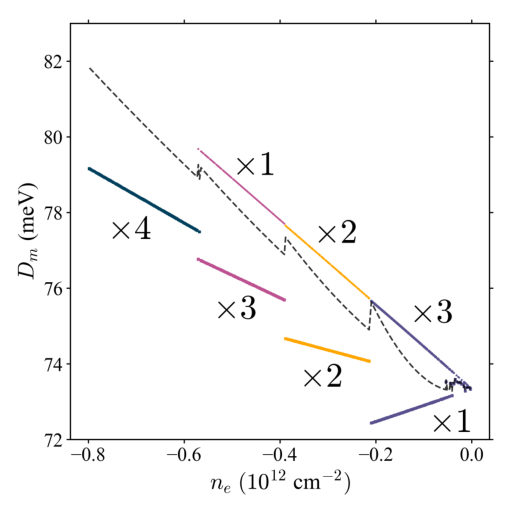
<figcaption class="paper-figure-caption"><b>Fig 2.</b> FIG. 2. Gap parameters of the four sectors as a function of ne for D = 0.92 V/nm. Dashed line denotes the chemical potential. The degeneracies associated with each value of the gap parameter are labeled. The degeneracy of the gaps below the chemical potential corresponds to the number of doped sectors of the fractional metallic phases.</figcaption>
</figure>
<figure class="paper-figure-card">
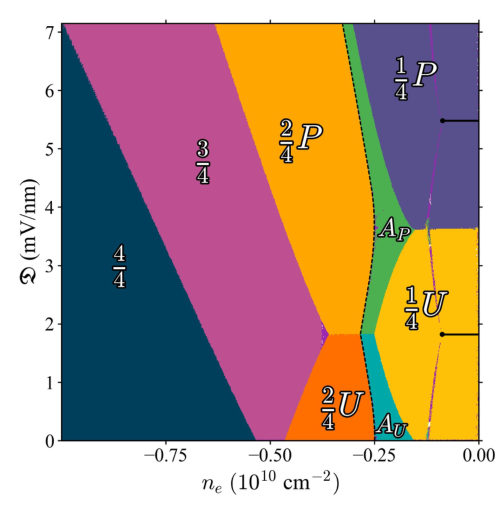
<figcaption class="paper-figure-caption"><b>Fig 3.</b> FIG. 3. Phase diagram at low ne and D. Four half-metallic ( 2</figcaption>
</figure>
</div>

<p><strong>Summary.</strong> This work develops a weak-coupling mean-field theory to map out the complex phase diagram of doped and biased Bernal bilayer graphene. By treating the system's interactions and external fields rigorously, the authors predict the existence of multiple fractional metallic states. The results provide quantitative agreement with recent experiments, advancing the understanding of correlated electronic behavior in 2D materials.</p>
<p><strong>Why it may be interesting.</strong> The study of correlated phases in graphene systems, especially those exhibiting fractional metallic states, touches upon strongly correlated electron physics, which shares theoretical tools with many-body physics relevant to AMO systems.</p>
<details>
<summary>Detailed structure</summary>
<p><strong>Main problem.</strong> The paper theoretically investigates the many-body electronic phases, particularly fractional metallic states, that emerge in doped and electrically biased Bernal-stacked (AB) bilayer graphene.</p>
<p><strong>Main result.</strong> The study predicts a rich phase diagram hosting several fractional-metal states, reproducing key experimental features, including the energy scale for the loss of fractional metallic order.</p>
<p><strong>Method.</strong> A variational mean-field theory is employed, utilizing a parameter-free Random-Phase Approximation for the short-range electron-electron interaction.</p>
<p><strong>Model / system.</strong> The physical system is AB bilayer graphene subjected to doping and an external bias field. The model incorporates kinetic energy, a screened short-range Coulomb repulsion, and a long-range capacitive potential dictated by the displacement field D.</p>
<p><strong>Key observables.</strong> Single-particle gap, nature of electronic phases (e.g., quarter-metal, half-metal, fractional metal), and the free energy.</p>
<p><strong>Important parameters / regimes.</strong> Doping level, applied bias voltage, and the experimentally controlled displacement field D.</p>
<p><strong>Assumptions / limitations.</strong> The theory uses a variational mean-field approach, and the long-range interaction is treated as a parallel-plate capacitor potential. The analysis also assumes the order parameter is Hermitian in some derivations.</p>
<p><strong>Figures summary.</strong> Figures illustrate the phase diagram in the (doping, bias) plane, showing transitions between various metallic states, and show the variation of gap parameters with doping at fixed voltage.</p>
<p><strong>Paper structure.</strong> The paper develops the Hamiltonian, derives self-consistency equations for the order parameters using mean-field theory, calculates the free energy, and maps out the resulting phase diagram in terms of doping and bias.</p>
</details>
<details>
<summary>Abstract</summary>
<p>The paper presents a theoretical study of many-body electronic phases in doped and electrically biased Bernal-stacked (AB) bilayer graphene. We develop a variational mean-field theory with no fitted parameters. For the electron-electron interaction, we employ a parameter-free random-phase approximation to model the short-range screened Coulomb repulsion. The remaining long-range Coulomb potential energy is dictated by the geometry of the sample, behaving as a parallel-plate capacitor. We formulate the theory directly in terms of the experimentally controlled displacement field $\frak D$ rather than the interaction-renormalized interlayer potential difference. It makes our theory better suited for direct comparison with experiment. The resulting phase diagram is quite rich. It hosts several fractional-metal states connected by first- and second-order transitions. At higher bias and doping, three distinct fractional metallic states emerge. We classify these phases by the number of doped sectors and the symmetry of the order parameters. Our results - obtained without any parameter fitting - reproduce key qualitative and quantitative features of recent experiments. This includes the energy scale associated with the loss of fractional metallic order. At lower bias and doping, the model stabilizes a broad spectrum of fractional-metal phases with more exotic symmetry-breaking patterns. This suggests that further experimental exploration of the latter regime is warranted.</p>
</details>
<p><sub><a href="#top">↑ back to top</a></sub></p>

<p><a id="paper-2609.03907"></a></p>
<h3 id="hierarchy-of-topological-superconductivity-generated-via-heterostructures-of-unconventional-math994math-wave-magnets"><a href="http://arxiv.org/abs/2609.03907v1">Hierarchy of topological superconductivity generated via heterostructures of unconventional $p$-wave magnets</a></h3>
<p><strong>Authors:</strong> Koushik R. Das, Arijit Saha<br>
<strong>Type:</strong> theory · <strong>Category:</strong> other · <strong>PDF:</strong> <a href="https://arxiv.org/pdf/2609.03907v1">https://arxiv.org/pdf/2609.03907v1</a><br>
<strong>Analysis basis:</strong> full PDF text, analyzed in chunks
<strong>Topic relevance:</strong> <code>analog quantum simulation</code> <strong>3/5</strong></p>
<div class="figure-strip-hint">↔ Scroll figures horizontally</div>
<div class="paper-figures-scroll">
<figure class="paper-figure-card">
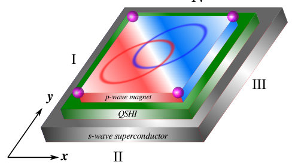
<figcaption class="paper-figure-caption"><b>Fig 1.</b> FIG. 1. Schematic of our heterostructure is demonstrated comprising of a conventional s-wave SC, a QSHI and a non- collinear pWM. In the SOTSC phase, the system hosts zero- energy MCMs, localized at each corner of the 2D domain. The four edges are denoted by I, II, III, IV.</figcaption>
</figure>
<figure class="paper-figure-card">
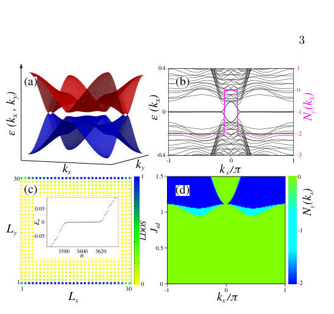
<figcaption class="paper-figure-caption"><b>Fig 2.</b> FIG. 3. (a) Bulk spectrum in the FOTSC phase is depicted in kx-ky plane exhibiting four gapless points. (b) The cor- responding spectrum considering a ribbon geimetry is shown as a function of kx manifesting the MFEMs, characterized by the winding number Ny (depicted in magenta). (c) LDOS spectra (at E = 0) is displayed in Lx −Ly plane considering a finite size system with 30×30 lattice sites. The inset exhibits the eigenvalue spectrum as a function of the eigenvalue index (employing OBC along both x and y directions) manifesting the MFEMs. (d) Variation of Ny is shown in the plane of Jsd and kx. For panels (a,b,c), the model parameters are chosen as m0 = 1, Jsd = 1.2, αx,y = 0.5. For panel...</figcaption>
</figure>
<figure class="paper-figure-card">
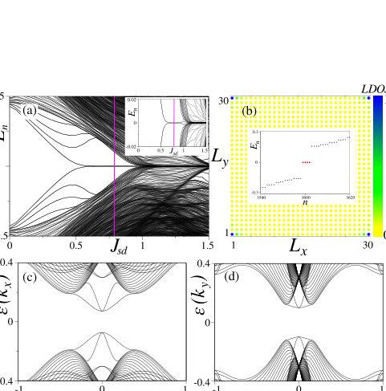
<figcaption class="paper-figure-caption"><b>Fig 3.</b> FIG. 2. (a) Eigenvalue spectra of HBdG (Eq. (1)) is displayed as function of Jsd employing OBC. For a given Jsd, marked by the magenta line, the system exhibits SOTSC phase with the inset highlighting the zoomed in version of that region. The corresponding LDOS at E = 0 is presented in panel (b), along with the eigenvalue spectrum as a function of state index n in the inset. The four MCMs are indicated by red dots, and located well inside the bulk gap. At SOTSC phase, the edge modes along both x and y directions are gapped out and are presented in panels (c) and (d), respectively. Here, we consider a finite size system with 30 × 30 lattice sites and the model parameters are chosen as: m0 =...</figcaption>
</figure>
<figure class="paper-figure-card">
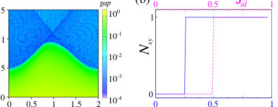
<figcaption class="paper-figure-caption"><b>Fig 4.</b> FIG. 4. (a) Bulk band gap is shown in the (Jsd −m0) plane. (b) Nxy is depicted as a function of Jsd and m0, indicated by the magenta and blue color lines, respectively. Here, Nxy versus Jsd is calculated at m0 = 1. For Nxy versus m0, the Jsd is fixed at 0.5. Other model parameters are chosen as αx,y = 0.5, λx,y = 1.0, ∆0 = 0.5.</figcaption>
</figure>
<figure class="paper-figure-card">
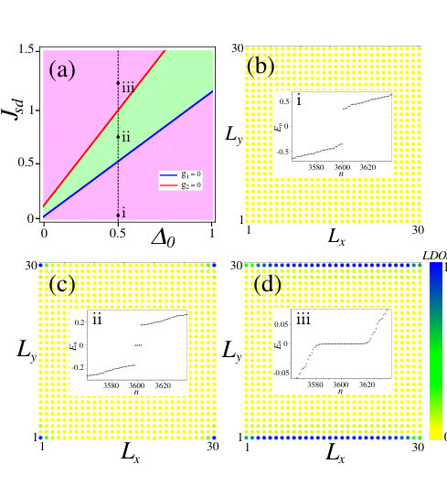
<figcaption class="paper-figure-caption"><b>Fig 5.</b> FIG. 5. (a) The mass (band) gap profile (Eq. (12)) is illus- trated in Jsd −∆0 plane. Here, g1 and g2 correspond to the mass gaps for HI edge and HII edge, respectively. The green re- gion indicates the validity of Jackiw-Rebbi condition and the magenta region imply otherwise. In panels (b,c,d), we depict the zero-energy LDOS distribution and eigenvalue spectrum (inset) obtained employing OBC corresponding to the points (i,ii,iii) of panel (a) respectively. The other model parameters are considered as m0 = 1, αx,y = 0.5, λx,y = 1.</figcaption>
</figure>
</div>

<p><strong>Summary.</strong> This theoretical study proposes a method to create and control a hierarchy of topological superconducting phases (FOTSC and SOTSC) in a heterostructure combining a QSHI and a p-wave magnet. By analyzing the BdG Hamiltonian and using topological invariants, the authors show that these distinct phases can be tuned by magnetic coupling, leading to the emergence of Majorana corner modes and unique edge states.</p>
<p><strong>Why it may be interesting.</strong> This work provides a detailed theoretical roadmap for realizing and controlling multiple distinct topological superconducting states using engineered material heterostructures, which is highly relevant for topological quantum computation.</p>
<details>
<summary>Detailed structure</summary>
<p><strong>Main problem.</strong> The paper aims to theoretically engineer and characterize the hierarchy of topological superconducting (TSC) phases, specifically first-order (FOTSC) and second-order (SOTSC), in a novel heterostructure.</p>
<p><strong>Main result.</strong> The model successfully demonstrates the tunability of both FOTSC and SOTSC phases by adjusting the magnetic coupling parameter, leading to distinct topological signatures like Majorana corner modes (MCMs) and different edge mode behaviors.</p>
<p><strong>Method.</strong> The analysis employs the Bogoliubov-de Gennes (BdG) Hamiltonian, utilizing symmetry invariants (winding numbers) and deriving low-energy edge theories to classify the topological phases.</p>
<p><strong>Model / system.</strong> The physical system is a 2D heterostructure composed of a Quantum Spin Hall Insulator (QSHI), an unconventional p-wave magnet (pWM), and proximity-induced s-wave superconductivity. The system is modeled using the BdG Hamiltonian, which incorporates contributions from the QSHI and pWM.</p>
<p><strong>Key observables.</strong> Topological phases (Trivial, FOTSC, SOTSC), 1D winding number, quadrupolar winding number, Majorana corner modes (MCMs), and Majorana flat/dispersive edge modes.</p>
<p><strong>Important parameters / regimes.</strong> The coupling parameter $J_{sd}$ (from the pWM) and the superconducting gap $\Delta_0$ are key tunability parameters.</p>
<p><strong>Assumptions / limitations.</strong> The analysis relies on deriving effective low-energy Hamiltonians by approximating trigonometric functions near the $\Gamma$ point and applying boundary conditions (OBC) for edge/corner mode analysis.</p>
<p><strong>Figures summary.</strong> Figures illustrate the eigenvalue spectra showing transitions between phases based on $J_{sd}$, and depict the localized MCMs in the SOTSC phase.</p>
<p><strong>Paper structure.</strong> The paper progresses by establishing the full BdG model, deriving effective low-energy edge and bulk Hamiltonians, characterizing the topological invariants (winding numbers), and finally mapping out the phase diagram showing the emergence of FOTSC and SOTSC regimes.</p>
</details>
<details>
<summary>Abstract</summary>
<p>A theoretical framework is proposed to engineer both first and second-order topological superconducting phases in a two-dimensional (2D) heterostructure, consisting of a quantum spin Hall insulator (QSHI) and an unconventional $p$-wave magnet in presence of proximity-induced $s$-wave superconducting pairing. Our analysis establishes that the transitions between the trivial and topological superconducting (TSC) phases can be regulated though the parameters of $p$-wave magnet. Presence of chiral symmetry leads to the characterization of both types of TSC phases by the respective invariants, one-dimensional winding number and quadrupolar winding number. These results are supplemented by an analytical effective low-energy edge theory that yields a deeper insight into the emergence of the different topological phases of the system. Bulk pairing analysis reveals the competition between the effective $(p_x+p_y)$ and $(p_x+ip_y)$ type pairings that are governed by the intrinsic spin-orbit coupling inherited to the QSHI and spin-split bands of the $p$-wave magnet, respectively.</p>
</details>
<p><sub><a href="#top">↑ back to top</a></sub></p>

<p><a id="paper-2609.04097"></a></p>
<h3 id="hydrodynamics-of-two-dimensional-electrons-due-to-scattering-by-disorder"><a href="http://arxiv.org/abs/2609.04097v1">Hydrodynamics of two-dimensional electrons due to scattering by disorder</a></h3>
<p><strong>Authors:</strong> D. R. Raskulov, K. A. Baryshnikov, P. S. Alekseev<br>
<strong>Type:</strong> both · <strong>Category:</strong> other · <strong>PDF:</strong> <a href="https://arxiv.org/pdf/2609.04097v1">https://arxiv.org/pdf/2609.04097v1</a><br>
<strong>Analysis basis:</strong> full PDF text, analyzed in chunks
<strong>Topic relevance:</strong> <code>Keldysh / 2PI / non-Gaussian methods</code> <strong>2/5</strong> · <code>methods for driven-dissipative</code> <strong>2/5</strong> · <code>Frenkel-Kontorova</code> <strong>1/5</strong> · <code>correlated / nonlocal dissipation</code> <strong>1/5</strong> · <code>driven-dissipative phase transition</code> <strong>1/5</strong> · <code>non-equilibrium universality</code> <strong>1/5</strong> · <code>scars &amp; prethermalization</code> <strong>1/5</strong></p>
<div class="figure-strip-hint">↔ Scroll figures horizontally</div>
<div class="paper-figures-scroll">
<figure class="paper-figure-card">
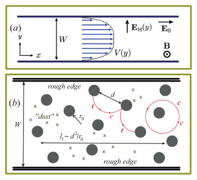
<figcaption class="paper-figure-caption"><b>Fig 1.</b> FIG. 1. (a): Long sample with non-interacting 2D electrons forming an Ohmic-hydrodynamic flow due to scattering on de- fects and rough longitudinal edges. The perpendicular mag- netic field B, the external electric field E0 due to applied voltage, and the internal Hall electric field EH(y) are shown, as well as the hydrodynamic velocity profile Vx(y) ≡V (y). (b): Sample with localized defects and weak unspecified de- fects between them (“dust”). The two types of 2D electron trajectories appear in magnetic field: the c-electrons, which do not collide with defects, and the t-electrons, which scatter by different defects.</figcaption>
</figure>
<figure class="paper-figure-card">
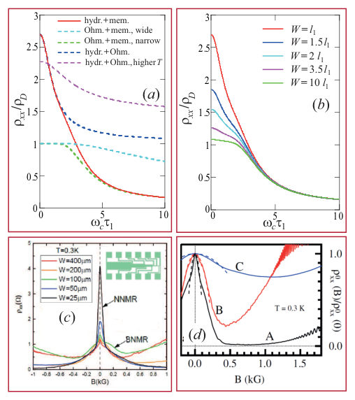
<figcaption class="paper-figure-caption"><b>Fig 2.</b> FIG. 2. (a): Mean sample resistivity ̺xx as a function of β = ωcτ1 obtained for: (i) the current hydrodynamic- memory model [Eq. (9)], (ii) the Gurzhi hydrodynamic-Ohmic model [Eq. (9) at P = 0], (ii) the Ohmic-memory model for a wide, W ≫ltc, [Eq. (11)] and a narrower, W ≲ltc, [Eq. (10)] samples. For all the curves except the violet one the param- eters: W = l1, l2 = 0.5 l1, l0 = 0.5 l1, and ld 1 = 20 l1 were used; for the violet curve l′ 1 = 0.7l1 and l′ 2 = 0.4l2, those correspond to a higher temperature. (b): Resistivity ̺xx as a function of β = ωcτ1 at various sample widths W for the current model. The lengths l2, l0, and ld 1 are the same as for panel (a). (c): Magnetoresistance for...</figcaption>
</figure>
</div>

<p><strong>Summary.</strong> This work develops a comprehensive theory for magnetotransport in 2D electron systems by combining memory effects from localized disorder scattering with hydrodynamic viscosity. The model successfully explains the observed giant negative magnetoresistance in high-quality quantum wells, distinguishing between narrow and wide sample regimes based on the relative dominance of these two physical mechanisms.</p>
<p><strong>Why it may be interesting.</strong> The detailed modeling of non-Markovian transport and the explicit separation of memory and hydrodynamic contributions provide a rich framework for understanding transport in disordered quantum systems, which is relevant to open quantum systems dynamics.</p>
<details>
<summary>Detailed structure</summary>
<p><strong>Main problem.</strong> The paper addresses the puzzle of observing hydrodynamic-like transport signatures, such as giant negative magnetoresistance, in 2D electron systems even when electron-electron scattering is too weak to cause them conventionally.</p>
<p><strong>Main result.</strong> The developed theory successfully explains the observed giant negative magnetoresistance by modeling the mixed transport regime involving both memory effects from localized defects and unconventional viscosity from bulk/edge scattering.</p>
<p><strong>Method.</strong> The authors developed a theoretical model using phenomenological balance transport equations for two types of electrons (circling and traveling) and solved them in the stationary regime.</p>
<p><strong>Model / system.</strong> The system is two-dimensional electron gas in high-quality nanostructures, such as GaAs quantum wells, subjected to weak disorder. The model incorporates memory effects and hydrodynamic viscosity arising from scattering mechanisms.</p>
<p><strong>Key observables.</strong> Magnetoresistance ($
ho_{xx}(B)$), exhibiting characteristic sharp peaks (narrow samples) or blunt maxima (wide samples) at zero magnetic field.</p>
<p><strong>Important parameters / regimes.</strong> Sample width ($W$), magnetic field ($B$), temperature ($T$), and characteristic scattering/transition lengths ($l_{tc}, l_G$).</p>
<p><strong>Assumptions / limitations.</strong> The model assumes the existence of two electron populations (c- and t-electrons) and uses approximations like the gradual channel approximation and stationary flow conditions.</p>
<p><strong>Figures summary.</strong> Figures compare the model's predictions for $
ho_{xx}$ vs. $B$ (showing characteristic shapes) against experimental measurements from GaAs quantum wells, demonstrating agreement in both narrow and wide sample limits.</p>
<p><strong>Paper structure.</strong> The paper develops the theory by formulating balance equations for electron densities and flows, deriving analytical expressions for $
ho_{xx}$ in different sample width limits, and finally comparing these theoretical predictions across various regimes (low/high B, narrow/wide W) against experimental data.</p>
</details>
<details>
<summary>Abstract</summary>
<p>The hydrodynamic regime of electron transport, induced by fast inter-electron collisions, was discovered in high-quality nanostructures in recent ten years. However, signs of hydrodynamic transport, primarily, the giant negative magnetoresistance, were observed even at very low temperatures, when electron-electron scattering is too weak to affect the transport. To address this puzzle, here we develop a theory of mixed, hydrodynamic and non-Markovian, magnetotransport of two-dimensional electrons at zero temperature in samples with weak but still important disorder. Namely, we account for both the memory effects at electron scattering by localized defects in magnetic field and an unconventional viscosity effect due to electron scattering by defects in bulk and by rough sample edges. Solution of the model yields a strong negative magnetoresistance, which exhibits at zero magnetic field a sharp maximum in narrower samples or a blunt maximum in wider samples. This and other our results explain various properties of the giant negative magnetoresistance observed on ultra-high-quality GaAs quantum wells, thereby we apparently reveal the nature of low-temperature magnetotransport in these systems.</p>
</details>
<p><sub><a href="#top">↑ back to top</a></sub></p>

<p><a id="paper-2609.03832"></a></p>
<h3 id="the-conductivity-matrix-at-the-topological-phase-transition"><a href="http://arxiv.org/abs/2609.03832v1">The conductivity matrix at the topological phase transition</a></h3>
<p><strong>Authors:</strong> Simone Fabbri, Giovanna Marcelli, Alessandro Giuliani<br>
<strong>Type:</strong> theory · <strong>Category:</strong> other · <strong>PDF:</strong> <a href="https://arxiv.org/pdf/2609.03832v1">https://arxiv.org/pdf/2609.03832v1</a><br>
<strong>Analysis basis:</strong> full PDF text, analyzed in chunks
<strong>Topic relevance:</strong> <code>Keldysh / 2PI / non-Gaussian methods</code> <strong>2/5</strong> · <code>analog quantum simulation</code> <strong>1/5</strong> · <code>driven-dissipative phase transition</code> <strong>1/5</strong> · <code>non-equilibrium universality</code> <strong>1/5</strong></p>
<div class="figure-strip-hint">↔ Scroll figures horizontally</div>
<div class="paper-figures-scroll">
<figure class="paper-figure-card">
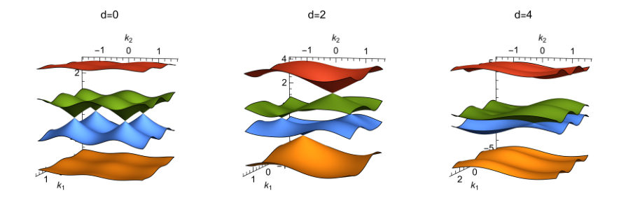
<figcaption class="paper-figure-caption"><b>Fig 1.</b> Figure 2: plot of the energy bands of the Bloch Hamiltonian in Eq. (3.3), at the values d = 0, d = 2 and d = 4 respectively.</figcaption>
</figure>
<figure class="paper-figure-card">
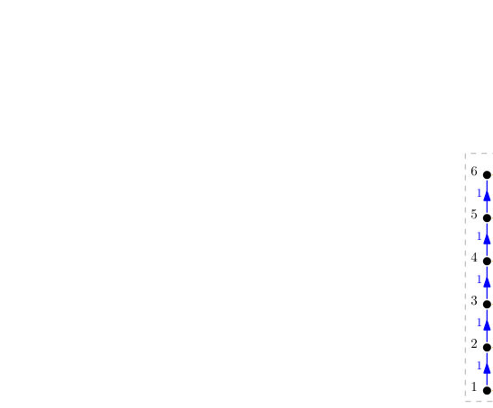
<figcaption class="paper-figure-caption"><b>Fig 2.</b> Figure 3: graphical representation of the Hofstadter model with magnetic flux Φ = π</figcaption>
</figure>
<figure class="paper-figure-card">
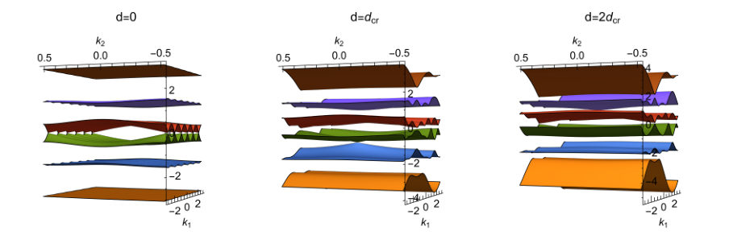
<figcaption class="paper-figure-caption"><b>Fig 3.</b> Figure 4: plot of the energy bands of the model defined by Eqs. (3.7)-(3.8), at the values d = 0, d = dcr and d = 2dcr respectively.</figcaption>
</figure>
<figure class="paper-figure-card">
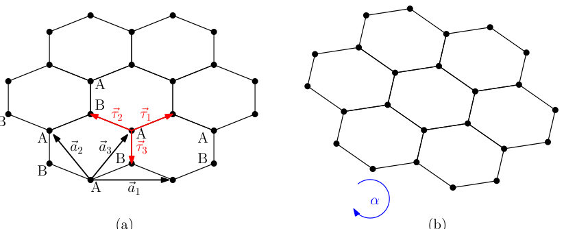
<figcaption class="paper-figure-caption"><b>Fig 4.</b> Figure 5: (a): lattice related to the strained Haldane model in Eq. (3.13), as in [48], where the labels A and B refer to the two sub-lattice; (b): lattice obtained from the original one by a clockwise rotation of angle α.</figcaption>
</figure>
</div>

<p><strong>Summary.</strong> This theoretical work derives the conductivity matrix for 2D semi-metallic electron systems undergoing a topological phase transition. While the general prediction is non-quantized conductivity, the authors show that imposing an emergent rotational symmetry restores quantization, particularly for the anti-symmetric part of the matrix. This sheds light on the conditions under which transport properties become robust topological invariants.</p>
<p><strong>Why it may be interesting.</strong> The rigorous derivation of transport coefficients like the conductivity matrix at a critical point, especially linking it to topological invariants under specific symmetry assumptions, is highly relevant to understanding quantum transport in novel materials.</p>
<details>
<summary>Detailed structure</summary>
<p><strong>Main problem.</strong> The paper aims to derive an explicit formula for the entire conductivity matrix at a topological phase transition (TPT) in 2D non-interacting semi-metallic electron systems.</p>
<p><strong>Main result.</strong> Generally, the conductivity matrix is not quantized, but universality is restored under the assumption of emergent rotational symmetry, leading to quantized values for the anti-symmetric part of the matrix.</p>
<p><strong>Method.</strong> The analysis uses the Euclidean many-body formalism and the Kubo formula, calculating the critical conductivity by averaging results from both sides of the transition.</p>
<p><strong>Model / system.</strong> The system is a general class of 2D non-interacting electron systems on a lattice, modeled by a Hamiltonian that exhibits semi-metallic behavior when two Bloch bands touch at conical intersections.</p>
<p><strong>Key observables.</strong> The full conductivity matrix $\sigma$, specifically the longitudinal ($\sigma_{ii}$) and transverse ($\sigma_{12}$) conductivities.</p>
<p><strong>Important parameters / regimes.</strong> The mass parameter $m$ controlling the TPT, the Fermi energy, and the external strain parameter.</p>
<p><strong>Assumptions / limitations.</strong> The analysis assumes the system is non-interacting and disorder-free, and for quantization results, it crucially assumes the existence of emergent discrete rotational invariance.</p>
<p><strong>Paper structure.</strong> The paper develops the theory by first establishing the general formula for $\sigma(m)$ using the Euclidean formalism, then analyzing the limits at the TPT ($m=0$), and finally discussing specific physical models and the conditions required for quantization.</p>
</details>
<details>
<summary>Abstract</summary>
<p>For a general class of two-dimensional non-interacting semi-metallic electron systems on a lattice, we derive an explicit formula for the whole conductivity matrix, by using Euclidean many-body formalism. The semi-metallic phase takes place whenever two Bloch bands touch at the Fermi energy with conical intersections and generally occurs at the transition between distinct integer quantum Hall phases. Unlike the longitudinal conductivity (which depends solely on the shape of the cones at the Fermi level), the transverse conductivity is remarkably determined both by the conical structures of the bands and by the nature of the two nearby topological phases. Generically, in the semi-metallic state, neither the longitudinal nor the transverse conductivities are quantized in integer multiples of a universal conductivity quantum; however, universality of the conductivity matrix is restored under the assumption of emergent rotational symmetry of the linearized Hamiltonian at the Fermi points. Using our formula, we compute the conductivity matrix for several physically relevant models of quantum Hall fluids at the topological phase transition, exhibiting cases where the transverse conductivity is quantized in half-integer multiples of $e^2/h$ and cases where it depends continuously on an external strain parameter, thus shedding light on its universality or non-universality features.</p>
</details>
<p><sub><a href="#top">↑ back to top</a></sub></p>

<p><a id="paper-2609.04093"></a></p>
<h3 id="extrinsic-orbital-edelstein-effect-from-asymmetric-scattering"><a href="http://arxiv.org/abs/2609.04093v1">Extrinsic orbital Edelstein effect from asymmetric scattering</a></h3>
<p><strong>Authors:</strong> Sankar Sarkar, Koushik Ghorai, Amit Agarwal<br>
<strong>Type:</strong> theory · <strong>Category:</strong> other · <strong>PDF:</strong> <a href="https://arxiv.org/pdf/2609.04093v1">https://arxiv.org/pdf/2609.04093v1</a><br>
<strong>Analysis basis:</strong> full PDF text, analyzed in chunks
<strong>Topic relevance:</strong> <code>Keldysh / 2PI / non-Gaussian methods</code> <strong>2/5</strong> · <code>methods for driven-dissipative</code> <strong>2/5</strong></p>
<div class="figure-strip-hint">↔ Scroll figures horizontally</div>
<div class="paper-figures-scroll">
<figure class="paper-figure-card">
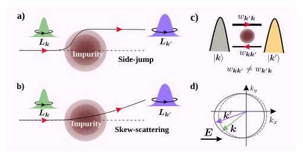
<figcaption class="paper-figure-caption"><b>Fig 1.</b> FIG. 1. Schematic of the disorder-induced contribu- tions to the OEE. (a) An electron with initial OAM Lk undergoes impurity scattering, acquires a side-jump coordi- nate shift, and is scattered into a state with OAM Lk′. (b) Asymmetric skew scattering bends the electron trajectory, connecting states with OAM Lk and Lk′. (c) Asymmetric scattering is characterized by unequal forward and backward scattering rates, wkk′ ̸= wk′k, between states with different momenta. (d) The combination of asymmetric scattering and the electric-field-shifted Fermi surface generates the disorder- driven orbital magnetization. The dotted circle in (d) repre- sents the unperturbed Fermi surface. For simplicity,...</figcaption>
</figure>
<figure class="paper-figure-card">
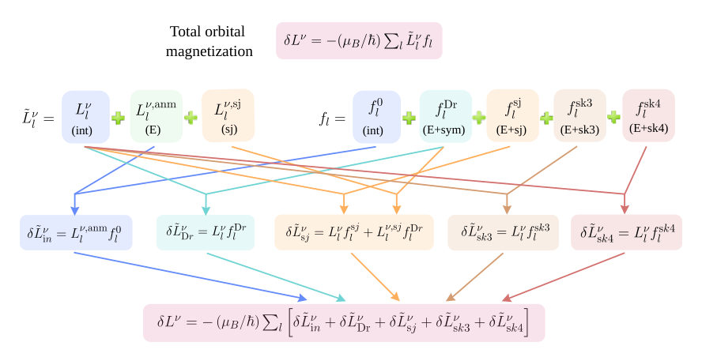
<figcaption class="paper-figure-caption"><b>Fig 2.</b> FIG. 2. Components of OEE. The total orbital magnetization is determined by the electric field (E)- and disorder-dressed OAM and the nonequilibrium distribution function. The dressed OAM consists of the unperturbed contribution (int), the field-induced anomalous correction (anm), and the side-jump correction (sj). The distribution function is decomposed into the equilibrium contribution (int) and four nonequilibrium (∼E) components according to the underlying scattering mechanisms: the conventional Drude contribution (Dr) from symmetric scattering (sym), the side-jump contribution (sj), and the third- and fourth-order skew-scattering contributions (sk3 and sk4). Combining these...</figcaption>
</figure>
<figure class="paper-figure-card">
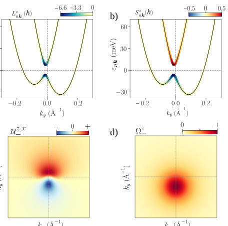
<figcaption class="paper-figure-caption"><b>Fig 3.</b> FIG. 3. Band dispersion and geometric quantities of the Rashba 2DEG. (a) and (b) show the z-component of the orbital- and spin-angular-momentum-projected band dis- persions along the ky direction, respectively. (c) and (d) present the momentum-space distributions of the AOP and BC, respectively, for the outer band (n = −1). The calcu- lations are performed using the parameter set α = 0.6 eV˚A, M = 10 meV, θ = π/4, and an effective mass m = 1.1me, where me is the bare electron mass.</figcaption>
</figure>
<figure class="paper-figure-card">
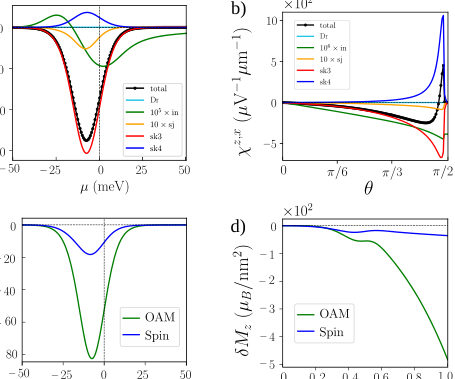
<figcaption class="paper-figure-caption"><b>Fig 4.</b> FIG. 4. Variation of the response with model parame- ters. (a) and (b) show the dependence of the contributions to χz,x on the chemical potential and exchange-field orientation θ, respectively. For better visibility, the side-jump contribu- tion is multiplied by 10, while the intrinsic contribution is multiplied by 105 and 106 in panels (a) and (b), respectively. (c) and (d) show the total orbital and spin magnetizations obtained from the five different contributions as functions of chemical potential and Rashba SOC strength, respectively. For (a) and (c), the parameters are the same as in Fig. 3. For (b), α = 0.6 eV ˚A, M = 10 meV, and µ = −7.5 meV. For (d), M = 10 meV, θ = π/4, and µ =...</figcaption>
</figure>
<figure class="paper-figure-card">

<figcaption class="paper-figure-caption"><b>Fig 5.</b> Figure 4(b) shows the dependence of the OEE re- sponses on the orientation of the exchange field. When the exchange field is aligned along the z axis, all OEE response components vanish. This behavior is consis- tent with the symmetry analysis in Table II, since for M ∥ˆz, the system preserves both MxT and MyT sym- metries, which forbid the OEE responses. In the other limiting case, M ⊥ˆz, the system preserves the Cz 2T sym- metry, which forces the band-diagonal OAM, BC, and energy-normalized BC to vanish throughout momentum space. Consequently, the conventional and asymmetric- scattering contributions constructed from these quanti-</figcaption>
</figure>
</div>

<p><strong>Summary.</strong> This theoretical work develops a detailed semiclassical theory to analyze the Orbital Edelstein Effect (OEE) in a Rashba 2DEG, specifically addressing the role of disorder. The key finding is that disorder-induced asymmetric scattering channels (side-jump and skew-scattering) can dominate the orbital magnetization, highlighting the crucial role of orbital degrees of freedom over spin degrees of freedom in this effect.</p>
<p><strong>Why it may be interesting.</strong> While focused on condensed matter transport, the rigorous symmetry analysis (T-odd vs. T-even contributions) and the explicit separation of scattering mechanisms provide a powerful theoretical template for analyzing non-equilibrium phenomena in quantum systems.</p>
<details>
<summary>Detailed structure</summary>
<p><strong>Main problem.</strong> The paper investigates the previously unclear contribution of disorder-induced asymmetric scattering mechanisms to the Orbital Edelstein Effect (OEE). It aims to provide a comprehensive theoretical decomposition of the total OEE.</p>
<p><strong>Main result.</strong> The disorder-induced side-jump and skew-scattering mechanisms can significantly enhance the orbital magnetization, potentially exceeding the intrinsic contribution by an order of magnitude in a magnetized Rashba 2DEG.</p>
<p><strong>Method.</strong> The authors developed a semiclassical Boltzmann theory, decomposing the total OAM polarization into five distinct channels corresponding to different scattering mechanisms (intrinsic, Drude, side-jump, and two skew-scattering orders).</p>
<p><strong>Model / system.</strong> The minimal model used is a magnetized Rashba two-dimensional electron gas (2DEG) subjected to an external electric field and impurity disorder potential. The analysis is performed using the semiclassical Boltzmann equation.</p>
<p><strong>Key observables.</strong> Orbital magnetization ($\delta L_
u$), Orbital Angular Momentum (OAM) polarization, and the susceptibility tensors quantifying the response in each scattering channel.</p>
<p><strong>Important parameters / regimes.</strong> Rashba coupling strength (SOC), magnetic field strength, and the scattering rates derived from the impurity potential.</p>
<p><strong>Assumptions / limitations.</strong> The theory operates in the weak-disorder limit and utilizes semiclassical approximations, including the small-momentum-transfer approximation for scattering calculations.</p>
<p><strong>Figures summary.</strong> Figure 1 schematically illustrates the four disorder-induced contributions to the OEE, while Figure 2 decomposes the total orbital magnetization into five distinct components based on scattering mechanisms.</p>
<p><strong>Paper structure.</strong> The paper builds from a general semiclassical Boltzmann framework, decomposing the collision integral into multiple scattering channels. It then analyzes the symmetry properties of these channels, culminating in quantitative results for the orbital magnetization in the Rashba 2DEG.</p>
</details>
<details>
<summary>Abstract</summary>
<p>The generation and manipulation of orbital angular momentum (OAM) by an external electric field constitute one of the central themes of orbitronics. In particular, the electrically induced nonequilibrium OAM polarization, known as the orbital Edelstein effect (OEE), has attracted considerable attention in recent years. While the intrinsic band-geometric mechanism and the role of conventional symmetric impurity scattering in the OEE are well understood, the contribution from disorder-induced asymmetric scattering remains unclear. Here, we develop a semiclassical theory that separates the OEE into intrinsic, Drude, side-jump, and third- and fourth-order skew-scattering channels. Unlike the Drude channel, the intrinsic, side-jump, and skew-scattering responses survive only in systems with broken time-reversal symmetry. We find that in a magnetized Rashba two-dimensional electron gas (2DEG), these disorder-induced mechanisms can substantially exceed the intrinsic contribution. Remarkably, we find that for a system with Rashba coupling of $1$ $eV Å$, the orbital magnetization is about one order of magnitude larger than the spin magnetization for the chosen parameters, highlighting the crucial role of orbital degrees of freedom in the Edelstein effect.</p>
</details>
<p><sub><a href="#top">↑ back to top</a></sub></p>

<p><a id="paper-2609.03259"></a></p>
<h3 id="nonlinear-reshaping-of-gaussian-water-wave-packets"><a href="http://arxiv.org/abs/2609.03259v1">Nonlinear Reshaping of Gaussian Water Wave Packets</a></h3>
<p><strong>Authors:</strong> Zibo Zheng, Takuji Waseda, C. Martijn de Sterke, Andrea Blanco-Redondo, Amin Chabchoub<br>
<strong>Type:</strong> both · <strong>Category:</strong> other · <strong>PDF:</strong> <a href="https://arxiv.org/pdf/2609.03259v1">https://arxiv.org/pdf/2609.03259v1</a><br>
<strong>Analysis basis:</strong> full PDF text, analyzed in chunks
<strong>Topic relevance:</strong> <code>analog quantum simulation</code> <strong>2/5</strong> · <code>Keldysh / 2PI / non-Gaussian methods</code> <strong>1/5</strong> · <code>methods for driven-dissipative</code> <strong>1/5</strong></p>
<div class="figure-strip-hint">↔ Scroll figures horizontally</div>
<div class="paper-figures-scroll">
<figure class="paper-figure-card">
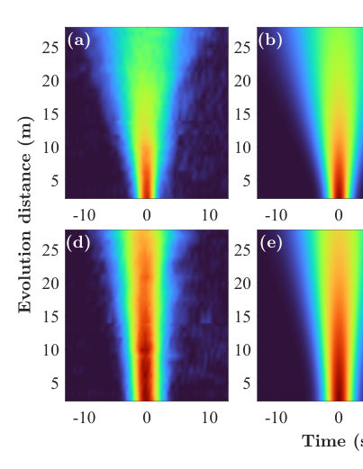
<figcaption class="paper-figure-caption"><b>Fig 1.</b> Figure 1 Spatial evolution of Gaussian envelopes in the dispersion-dominated regime. (a)-(c) Evo- lution for the initial amplitude parameter N = 0.36. (d)-(f) Evolution for N = 0.6. Panels (a) and (d) show the experimental results, (b), (e) show numerical results using the LSE, whereas (c), (f) show numerical results from the NLSE. All results are presented in a reference frame moving with the group velocity cg.</figcaption>
</figure>
<figure class="paper-figure-card">
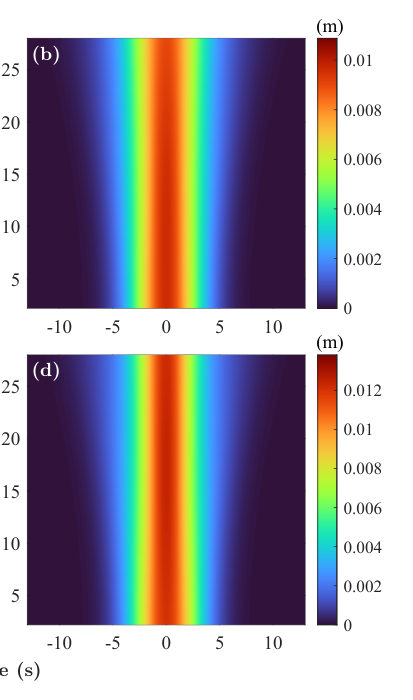
<figcaption class="paper-figure-caption"><b>Fig 2.</b> Figure 2 Spatial evolution of Gaussian envelopes in the quasi-stationary and solitonic regime. (a), (b) Evolution for the initial amplitude parameter N = 0.8. (c), (d) Evolution for N = 1.0. (a) and (c) show the experimental results, whereas (b) and (d) refer to the respective numerical NLSE results. All results are presented in a reference frame moving with the group velocity cg.</figcaption>
</figure>
<figure class="paper-figure-card">
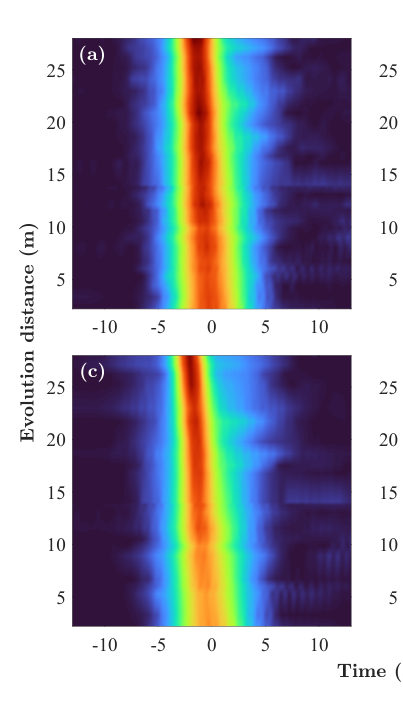
<figcaption class="paper-figure-caption"><b>Fig 3.</b> Figure 3 Spatial evolution of Gaussian envelopes in the focusing and multi-soliton regime. (a) and (b) Evolution for the initial amplitude parameter N = 1.2. (c) and (d) Evolution for N = 1.4. Panels (a) and (c) show the experimental results, while panels (b) and (d) refer to the respective numerical NLSE results. All results are presented in a reference frame moving with the group velocity cg.</figcaption>
</figure>
<figure class="paper-figure-card">
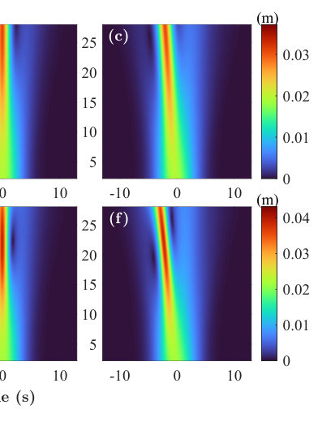
<figcaption class="paper-figure-caption"><b>Fig 4.</b> Figure 4 Spatial evolution of Gaussian envelopes in the focusing and multi-soliton regime. (a)-(c) Evolution for the initial amplitude parameter N = 1.6. (d)-(f) Evolution for N = 1.8. Panels (a, d) show the experimental results, while panels (b), (e) and (c), (f) show the numerical results with the NLSE and the MNLSE, respectively. All results are presented in a reference frame moving with the group velocity cg.</figcaption>
</figure>
<figure class="paper-figure-card">

<figcaption class="paper-figure-caption"><b>Fig 5.</b> Figure 5 Evolution of normalized envelope amplitude along the water channel. The panels show the evolution for (a) the dispersion-dominated, (b) the quasi-stationary and solitonic, and (c),(d) the focusing and multi-soliton regimes. Solid lines represent the numerical simulations with the NLSE in (a)-(c) and the MNLSE in (d), while dotted lines represent the experimental data.</figcaption>
</figure>
</div>

<p><strong>Summary.</strong> This work systematically studies how Gaussian wave packets reshape when propagating in deep water, governed by nonlinear dispersive effects. By comparing lab experiments with numerical solutions of the NLSE and MNLSE, the authors map out regimes ranging from dispersive broadening to strong nonlinear focusing. The findings provide crucial guidance for controlling localized wave energy in various nonlinear physical systems.</p>
<p><strong>Why it may be interesting.</strong> While focused on classical water waves, the underlying mathematical framework—the nonlinear Schrödinger equation and its higher-order corrections—is central to nonlinear wave physics relevant to quantum optics and nonlinear wave propagation in various media.</p>
<details>
<summary>Detailed structure</summary>
<p><strong>Main problem.</strong> The paper investigates the nonlinear reshaping and evolution of Gaussian wave packets propagating in deep water.</p>
<p><strong>Main result.</strong> The wave packet evolution depends critically on the balance between dispersion and nonlinearity, showing steady propagation when parameters match the NLSE soliton, but requiring higher-order corrections (MNLSE) in strongly focusing regimes.</p>
<p><strong>Method.</strong> The study combines laboratory experiments measuring wave profiles with numerical simulations solving the Nonlinear Schrödinger Equation (NLSE) and its modified version (MNLSE).</p>
<p><strong>Model / system.</strong> The physical system is deep-water surface waves, modeled by the wave envelope $A(x, t)$ governed by the NLSE or MNLSE, derived from the Euler equations.</p>
<p><strong>Key observables.</strong> Wave packet evolution (broadening, focusing, steady propagation), envelope amplitude, and width.</p>
<p><strong>Important parameters / regimes.</strong> The dimensionless amplitude factor $N$ (varied from 0.36 to 1.8) and the ratio of characteristic lengths $L_D/L_{NL}$.</p>
<p><strong>Assumptions / limitations.</strong> The NLSE is an approximation valid for small steepness; the MNLSE is used when higher-order effects become significant during strong focusing.</p>
<p><strong>Figures summary.</strong> Figures illustrate the spatial evolution of Gaussian envelopes across different regimes (dispersion-dominated, quasi-stationary, focusing), comparing experimental data with NLSE and MNLSE predictions.</p>
<p><strong>Paper structure.</strong> The paper establishes the physical problem, derives the governing equations (NLSE/MNLSE), details the methodology (experimental setup and numerical solvers), presents results across varying nonlinearity regimes, and concludes with acknowledgements.</p>
</details>
<details>
<summary>Abstract</summary>
<p>The propagation of narrowband wave packets is a classical problem with broad relevance across nonlinear wave physics. Within the framework of the nonlinear Schrödinger equation, solitons are known to propagate without changing shape, whereas Gaussian envelopes may undergo substantial reshaping depending on the balance between dispersion and nonlinearity. Here, we combine laboratory experiments with numerical simulations to systematically investigate the evolution of hydrodynamic Gaussian wave packets over a wide range of amplitudes and spectral bandwidths. We show that when the envelope amplitude and width match those of the stationary NLSE soliton solution, the wave packet propagates steadily in the wave flume. More generally, by varying the amplitude of the Gaussian envelope, the wave packet may undergo either dispersive broadening or nonlinear focusing, resembling the dynamics of Satsuma-Yajima breathers. These findings may facilitate the controlled generation and manipulation of localized wave packets in a variety of nonlinear dispersive systems, including optics, plasmas, and Bose-Einstein condensates.</p>
</details>
<p><sub><a href="#top">↑ back to top</a></sub></p>

<p><a id="paper-2609.03244"></a></p>
<h3 id="vortex-solitons-in-disclination-quasicrystals"><a href="http://arxiv.org/abs/2609.03244v1">Vortex solitons in disclination quasicrystals</a></h3>
<p><strong>Authors:</strong> Hua Zhong, Yaroslav V Kartashov, Yongdong Li, Fangwei Ye, Yiqi Zhang<br>
<strong>Type:</strong> theory · <strong>Category:</strong> other · <strong>PDF:</strong> <a href="https://arxiv.org/pdf/2609.03244v1">https://arxiv.org/pdf/2609.03244v1</a><br>
<strong>Analysis basis:</strong> full PDF text, analyzed in chunks
<strong>Topic relevance:</strong> <code>interference shaping light</code> <strong>2/5</strong> · <code>analog quantum simulation</code> <strong>1/5</strong></p>
<div class="figure-strip-hint">↔ Scroll figures horizontally</div>
<div class="paper-figures-scroll">
<figure class="paper-figure-card">

<figcaption class="paper-figure-caption"><b>Fig 1.</b> FIG. 1. Quasicrystals obtained using Penrose tiling (top) and its disclination counterparts (bottom) with different discrete rota- tional symmetries Cν. The yellow sector with the Frank angle of θ = 2π/5 can be removed or added into structure to introduce disclination defect.</figcaption>
</figure>
<figure class="paper-figure-card">

<figcaption class="paper-figure-caption"><b>Fig 2.</b> FIG. 2. Disclination quasicrystalline lattices and their spectra. (a) Quasicrystal generated using Penrose tiling and its linear spectrum in the form of dependence of eigenvalues of all modes b on mode index n (e). (b) C4 symmetric disclination quasicrystal and its spectrum (f). (c) C6 symmetric disclination quasicrystal and its spectrum (g). (d) C7 symmetric disclination quasicrystal and its spectrum (h). Colored dots in (e-h) represent pairs of degenerate states, whose linear combination produces vortices with m ± 1.</figcaption>
</figure>
<figure class="paper-figure-card">

<figcaption class="paper-figure-caption"><b>Fig 3.</b> FIG. 3. Vortex state with m = ±1 composed of degenerated modes. (a) Profiles of two degenerate modes u82 and u82, and modulus and phase (inset) distributions in in-phase vortex state u82 + iu83 constructed using these modes in C5 quasicrystal constructed using Penrose tiling. (b) Degenerate modes u383 and u384 and out-of-phase vortex supported by C5 quasicrystal. Other panels show profiles of degenerate modes and in-phase and out-of-phase vortices constructed on them in C4 (c),(d), C6 (e),(f), and C7 (g),(h) disclination quasicrystals. For convenience of presentation and comparison of different modes, the peak amplitude of each linear mode in this figure is normalized to 1. The faint...</figcaption>
</figure>
<figure class="paper-figure-card">

<figcaption class="paper-figure-caption"><b>Fig 4.</b> FIG. 4. Vortex soliton families with m = ±1. (a-d) U(b) dependencies for out-of-phase vortex soliton families with topological charge |m| = 1 in quasicrystals with different discrete rotational symmetries. Gray areas correspond to mini-bands from linear spectra in Fig. 2. (e-p) Field modulus and corresponding phase (insets) distributions of the vortex solitons corresponding to the dots with letters in U(b) dependencies.</figcaption>
</figure>
<figure class="paper-figure-card">

<figcaption class="paper-figure-caption"><b>Fig 5.</b> FIG. 5. Linear stability analysis of vortex solitons in the C4 quasicrystal. (a) Perturbation growth rate βre versus propagation constant b for out-of-phase vortex solitons in C4 quasicrystal. (b) Peak amplitude A = max|ψ| of representative stable (blue curve) and unstable (red curve) perturbed vortex solitons versus propagation distance. (c-h) Field modulus phase distributions of solitons at different propagation distances corresponding to the dots in panel (b).</figcaption>
</figure>
</div>

<p><strong>Summary.</strong> This paper explores vortex solitons in quasicrystals by introducing controlled topological defects called disclinations. By modifying the underlying symmetry of the quasicrystal structure, the authors demonstrate the creation of new, stable vortex soliton families. This expands the understanding of wave localization in complex, aperiodically structured photonic media.</p>
<p><strong>Why it may be interesting.</strong> This work bridges nonlinear optics, topological physics, and quasiperiodicity, showing how engineered defects can fundamentally alter the light-matter interaction and support robust, topologically protected wave states.</p>
<details>
<summary>Detailed structure</summary>
<p><strong>Main problem.</strong> The study investigates how introducing global topological defects, specifically disclinations, into quasicrystals affects the stable propagation of vortex-carrying light beams and vortex solitons.</p>
<p><strong>Main result.</strong> The introduction of disclinations enriches the linear spectrum, enabling the existence of new, stable, thresholdless vortex solitons whose properties reflect the quasicrystal's discrete rotational symmetry.</p>
<p><strong>Method.</strong> The analysis uses the nonlinear Schrödinger equation (NLSE) governing the light field, analyzing the linear spectrum and solving the nonlinear equation numerically.</p>
<p><strong>Model / system.</strong> The system models light propagation in photonic quasicrystals, constructed by deforming Penrose tilings with controlled topological defects (disclinations) to achieve various discrete rotational symmetries ($    ext{C}
u$).</p>
<p><strong>Key observables.</strong> Stable vortex soliton existence, soliton intensity/phase distributions, and the dependence of soliton stability intervals on the discrete rotational symmetry $    ext{C}
u$.</p>
<p><strong>Important parameters / regimes.</strong> Discrete rotational symmetry order ($
u$), the strength of the nonlinearity, and the topological defect structure.</p>
<p><strong>Assumptions / limitations.</strong> The analysis assumes the quasicrystals are large enough to exhibit the desired symmetries, and the study focuses on the evolution of localized vortex inputs in a pre-fabricated potential.</p>
<p><strong>Figures summary.</strong> Figures illustrate the construction of quasicrystals via disclinations for different symmetries ($ ext{C}_5,   ext{C}_4,   ext{C}_6,   ext{C}_7$), show the linear spectra, and display the profiles and phase distributions of the resulting vortex states.</p>
<p><strong>Paper structure.</strong> The paper establishes the physical model using the NLSE, details the method of generating defect-laden quasicrystals, analyzes the linear spectrum, and finally presents the findings regarding the bifurcation and stability of vortex solitons.</p>
</details>
<details>
<summary>Abstract</summary>
<p>Being structures characterized by discrete rotational symmetry $\mathcal{C}_ν$ of order $ν$, photonic quasicrystals are capable to support stable propagation of linear vortex-carrying light beams and vortex solitons. However, the impact of discrete rotational symmetry $ν$ of quasicrystals on the properties of vortex light states was not investigated so far, as only the systems constructed using the simplest Penrose tiling or corresponding optically induced Penrose lattices were considered in this context. Here we propose a broad class of quasicrystals with global topological defects -- disclinations -- introduced into their structure that allows to produce new quasicrystalline structures with any desired order of discrete rotational symmetry from basic Penrose structure. Such global topological deformation substantially enriches linear spectrum of quasicrystals, allowing them to support new types of linear vortex states and bifurcating from them families of stable thresholdless vortex solitons with unusual intensity and phase distributions. We found two different classes of stable vortex solitons consisting of in-phase or out-of-phase pairs of closely located bright spots, with total intensity distribution reflecting particular discrete rotational symmetry of the quasicrystal with disclination. Remarkably, even low-charge vortex solitons can be stable in quasicrystals with disclinations, while stability intervals for them broaden with decrease of the discrete rotational symmetry $\mathcal{C}_ν$ of quasicrystal. Our results expand the theory of localization in quasicrystals to structures with global topological deformation, highlighting new prospects for robust transmission of power or information arising in these systems.</p>
</details>
<p><sub><a href="#top">↑ back to top</a></sub></p>

<p><a id="paper-2609.03059"></a></p>
<h3 id="flux-noise-without-flux-tunability-in-superconducting-qubits"><a href="http://arxiv.org/abs/2609.03059v1">Flux noise without flux tunability in superconducting qubits</a></h3>
<p><strong>Authors:</strong> Daniel Kruti, Roman-Pascal Riwar<br>
<strong>Type:</strong> theory · <strong>Category:</strong> quantum information and computing · <strong>PDF:</strong> <a href="https://arxiv.org/pdf/2609.03059v1">https://arxiv.org/pdf/2609.03059v1</a><br>
<strong>Analysis basis:</strong> full PDF text, analyzed in chunks
<strong>Topic relevance:</strong> <code>QC/QI experiment</code> <strong>1/5</strong> · <code>correlated / nonlocal dissipation</code> <strong>1/5</strong></p>
<div class="figure-strip-hint">↔ Scroll figures horizontally</div>
<div class="paper-figures-scroll">
<figure class="paper-figure-card">

<figcaption class="paper-figure-caption"><b>Fig 1.</b> Figure 1. Main concept developed in this work, based on Faraday’s law of induction. A time-dependent or fluctuating magnetic field B induces a corresponding electromotive force (EMF) via the electric field E (a). Flux noise couples to single-junction (b) as well as double-junction (c) transmon qubits (with capacitor wings) and thus affects qubit performance (in particular the quality factor) independent of flux-tunability. Assigning to each junction ν a Peierls-like phase drop ϕν, we can distinguish between the regular flux mode and an EMF mode. The former enters via the phase difference ϕ1 −ϕ2 which is proportional to the applied magnetic flux piercing the loop area (red area in c). The...</figcaption>
</figure>
<figure class="paper-figure-card">

<figcaption class="paper-figure-caption"><b>Fig 2.</b> Figure 2. Aspects relevant for the formulation of the irrotational gauge for the vector potential A, which allows to compute the phase drops ϕν in Fig. 1. Top view (plane in x and y) of a transmon device (a). The large capacitor wings form a thin film bulk Σ, with boundary ∂Σ and the unit vector normal to the boundary n. Due to Meissner (Pearl) screening in 2D, a superconducting sheet current J flows within the thin film. The filamentary bridge forming the Josephson junction can be neglected in the calculation of all relevant fields due to the large capacitor wings (b), see also Ref. [27]. The computation of the irrotational vector potential Airr (in free space), as well as the 2D Meissner...</figcaption>
</figure>
<figure class="paper-figure-card">

<figcaption class="paper-figure-caption"><b>Fig 3.</b> Figure 3. Justification for neglecting the top and bottom surfaces of the thin film for the Faraday problem. For regular electrostatics in voltage-biased co-planar capacitors, top and bottom surface charges are dominant (a). In contrast, for a magnetic field with dominant z-component (perpendicular to the chip plane), the corresponding induced electric field is in- plane, leading to dominant surface charges at the 1D rim (b).</figcaption>
</figure>
<figure class="paper-figure-card">

<figcaption class="paper-figure-caption"><b>Fig 4.</b> Figure 4. Exploiting conformal maps to compute the vector potential in the irrotational gauge Airr and ultimately the phases ϕν. We illustrate the principle by means of the device geometry in Fig. 1, representing a transmon with rectangular capacitor wings. The real space (left panel) excluding the superconducting volumes Σ is mapped onto a rectangle with periodic boundaries (cylinder manifold, right panel). For rectangular capacitor wings, the regions C, L, R, and F are mapped piece-wise, and stitched together via continuity constraints. A simplified computation for ϕν is possible for the case when bridge paths are straight lines in the conformal space, i.e., with coordinate v constant and...</figcaption>
</figure>
<figure class="paper-figure-card">

<figcaption class="paper-figure-caption"><b>Fig 5.</b> Figure 5. Central issue with the reciprocity principle to account for the Faraday effect. Reciprocity relies on computing the magnetic field induced by a supercurrent circulating within the device, which is then seen by a given magnetic dipole. For a single junction device (a) no such loop current exists. One can define a dipole current of magnitude I1 going through junction 1, and compute its corresponding magnetic field, but this current is not source-free, making it impossible to generalise the reciprocity approach in this simple manner to capture the EMF mode. For a two-junction device we can define a loop current of magnitude Iloop (b) and two dipole currents along individual junctions...</figcaption>
</figure>
</div>

<p><strong>Summary.</strong> This paper provides a comprehensive theoretical framework to understand how magnetic flux noise couples to superconducting qubits by incorporating the full effects of Faraday's law. It demonstrates that this coupling imposes a fundamental, universal limit on the qubit quality factor, even in devices without explicit flux loops. The findings also establish geometric constraints, such as a 'safety distance,' that must be respected when scaling up quantum processors.</p>
<p><strong>Why it may be interesting.</strong> This work provides a rigorous, fundamental theoretical constraint on qubit performance based on electromagnetic coupling principles, which is crucial for designing next-generation quantum hardware.</p>
<details>
<summary>Detailed structure</summary>
<p><strong>Main problem.</strong> Flux noise is a leading dephasing mechanism in superconducting qubits, but the microscopic understanding of its coupling to the device geometry is incomplete.</p>
<p><strong>Main result.</strong> The work derives a general coupling framework showing that flux noise imposes a fundamental upper limit on the qubit quality factor, even for nominally non-flux-tunable qubits.</p>
<p><strong>Method.</strong> The authors use a quantum geometric description of the Faraday effect to derive the coupling between generic magnetic sources and superconducting thin films, treating electric and magnetic fields together.</p>
<p><strong>Model / system.</strong> The system involves superconducting qubits (like transmons) modeled as thin film structures interacting with time-varying magnetic dipoles or flux lines. The analysis distinguishes between the standard flux mode and a novel electromotive field (EMF) mode.</p>
<p><strong>Key observables.</strong> Qubit quality factor (Q), dephasing/relaxation rates ($\Gamma_\phi, \Gamma_1$), and the flux power noise spectrum ($S_\Phi(\omega)$).</p>
<p><strong>Important parameters / regimes.</strong> The predicted fundamental limit for Q is estimated between $10^8$ and $10^{10}$; the 'minimal safety distance' for flux lines is also derived.</p>
<p><strong>Assumptions / limitations.</strong> The analysis assumes surface spins are the microscopic origin of $1/f$ flux noise and extends the formalism to include finite size effects from capacitor wings.</p>
<p><strong>Figures summary.</strong> Figures illustrate the coupling mechanism via Faraday's law, showing how induced EMF affects different qubit geometries (single vs. double junction) and distinguishing between flux and EMF modes.</p>
<p><strong>Paper structure.</strong> The paper builds from the general coupling derivation based on the Faraday effect to specific applications in qubit loss mechanisms, culminating in quantitative predictions for the Q-factor limit and spatial constraints for flux lines.</p>
</details>
<details>
<summary>Abstract</summary>
<p>Flux noise is unanimously recognised as a leading dephasing mechanism for flux-tunable superconducting qubits. However, our microscopic understanding remains incomplete, and basic effects like Faraday's law of induction have only very recently come into focus. Based on a quantum geometric description of the Faraday effect, we provide an in-depth derivation of the coupling of generic magnetic sources to thin film superconducting structures, under appropriate consideration of the device geometry. We apply the resulting framework to time-varying magnetic dipoles, describing surface or substrate spins, as well as current-carrying flux lines. We show that flux noise not only affects dephasing, but also provides a fundamental limit for the qubit quality factor - notably, even when the qubit contains no loops and is thus nominally not flux-tunable. Assuming surface spins as the origin for universal flux noise, we expect that this quality factor limit might be reached in the near term. For flux lines, we formulate a minimal safety distance to conserve the qubit performance, potentially constraining the scale-up of quantum hardware. This distance is boosted in the presence of large capacitor wings typical for transmons, due to a lensing of the electromotive field which is largely independent of Meissner screening.</p>
</details>
<p><sub><a href="#top">↑ back to top</a></sub></p>

<p><a id="paper-2609.03555"></a></p>
<h3 id="spectral-function-method-and-janus-quantum-numbers-in-quasiperiodic-systems"><a href="http://arxiv.org/abs/2609.03555v1">Spectral Function Method and Janus Quantum Numbers in Quasiperiodic Systems</a></h3>
<p><strong>Authors:</strong> Tian-Le Wu, Shi-Ping Ding, Miao Liang, Jing-Tao Lü, Jin-Hua Gao<br>
<strong>Type:</strong> theory · <strong>Category:</strong> disordered systems and neural networks · <strong>PDF:</strong> <a href="https://arxiv.org/pdf/2609.03555v1">https://arxiv.org/pdf/2609.03555v1</a><br>
<strong>Analysis basis:</strong> full PDF text, analyzed in chunks
<strong>Topic relevance:</strong> <code>Frenkel-Kontorova</code> <strong>1/5</strong> · <code>analog quantum simulation</code> <strong>1/5</strong></p>
<div class="figure-strip-hint">↔ Scroll figures horizontally</div>
<div class="paper-figures-scroll">
<figure class="paper-figure-card">

<figcaption class="paper-figure-caption"><b>Fig 1.</b> FIG. 1. (a) Momentum-space coupling chain of the AAH model. Curves show the wavefunction distribution over mo- mentum sites Km. (b) Spiral mapping from chain sites Km to the PBZ. (c) IEB dispersion (red) and replica bands (gray) at V = 1.2t, calculated by the projection method. Throughout this paper, we set α = ( √</figcaption>
</figure>
<figure class="paper-figure-card">

<figcaption class="paper-figure-caption"><b>Fig 2.</b> FIG. 2. (a) Schematic of the spectral function method: only eigenstates localized near |K0⟩(red, blue) contribute; a double- peak distribution (red) invalidates the projection method. (b) A(k, ω) and DOS at V = 1t . (c) A(k, ω) and DOS at V = 3t.</figcaption>
</figure>
<figure class="paper-figure-card">

<figcaption class="paper-figure-caption"><b>Fig 3.</b> FIG. 3. (a) Moment-locking ratio γ = µp,c(k)/µp(k) vs. nc for p = 3–11, V = 1t, k = 0.1G1. Lower-order moments lock to unity at small nc; higher orders require progressively larger truncations[18]. (b) Density of states convergence error ∆ρ[18] vs. nc (log scale) for V = t (extended), V = 2t (critical), and V = 3t (localized).</figcaption>
</figure>
<figure class="paper-figure-card">

<figcaption class="paper-figure-caption"><b>Fig 4.</b> FIG. 4. Janus quantum numbers in the AAH model. (a) IEB dispersion at V = 1t: seven eigenstates (E vs. k) marked by distinct symbols. (b) IPR diagram of AAH model[18]. Seven non-crossing curves track the same eigenstates continuously from V &lt; 2t to V &gt; 2t. (c) LSEB at V = 3t[18]: the same seven eigenstates (E vs. r) now labeled by real-space coordinate r, revealing the dual face of a Janus quantum number.</figcaption>
</figure>
<figure class="paper-figure-card">

<figcaption class="paper-figure-caption"><b>Fig 5.</b> Fig. 4 illustrates this explicitly for the AAH model. Fig. 4(a) shows the IEB at V = 1t with several eigen- states marked by their momenta. Fig. 4(b) tracks these same eigenstates in the E-V diagram, color-coded by the inverse participation ratio (IPR); the non-crossing curves are clearly visible, and the IPR shows the continuous crossover from extended to localized behavior at V = 2t. Fig. 4(c) plots the LSEB at V = 3t, where the same eigen- states are now naturally labeled by real-space indices—a direct visualization of the Janus property.</figcaption>
</figure>
</div>

<p><strong>Summary.</strong> This paper introduces a comprehensive spectral theory for quasiperiodic systems, overcoming the limitations of conventional band theory. It proposes an efficient spectral function method and defines 'Janus quantum numbers' to label eigenstates consistently across localization transitions. This framework allows for the calculation and understanding of energy spectra in complex, non-periodic quantum materials.</p>
<p><strong>Why it may be interesting.</strong> The development of a rigorous 'band theory' for quasiperiodic systems provides powerful tools for analyzing complex, non-periodic quantum materials, which is highly relevant for understanding engineered quantum matter.</p>
<details>
<summary>Detailed structure</summary>
<p><strong>Main problem.</strong> The absence of translational symmetry in quasiperiodic systems invalidates conventional band theory, posing a central challenge in understanding their energy spectra.</p>
<p><strong>Main result.</strong> The authors establish a unified spectral theory using a spectral function method and Janus quantum numbers, allowing for state definition and computation analogous to periodic systems.</p>
<p><strong>Method.</strong> They develop an efficient spectral function method that calculates the spectral function A(k,ω) using a small truncated Hamiltonian matrix, bypassing full diagonalization.</p>
<p><strong>Model / system.</strong> The study focuses on quasiperiodic systems, exemplified by the Aubry-André-Harper (AAH) model, which lacks translational symmetry.</p>
<p><strong>Key observables.</strong> Spectral Function A(k,ω), Incommensurate Energy Bands (IEB) dispersion E(k), and Janus quantum numbers.</p>
<p><strong>Important parameters / regimes.</strong> The ratio of potential strength to hopping amplitude (e.g., V/t) determines the localization regime, and the system is analyzed in the thermodynamic limit.</p>
<p><strong>Assumptions / limitations.</strong> The spectral function method converges via a successive locking of energy moments, allowing for exact thermodynamic-limit results without finite-size scaling.</p>
<p><strong>Figures summary.</strong> Figures illustrate the spectral function calculation, the convergence of energy moments via moment-locking ratios, and the relationship between k-space and real-space descriptions.</p>
<p><strong>Paper structure.</strong> The paper builds from identifying the failure of conventional band theory to proposing the IEB concept, introducing the spectral function method to calculate A(k,ω), and finally unifying the framework with Janus quantum numbers to create a complete spectral theory.</p>
</details>
<details>
<summary>Abstract</summary>
<p>The absence of translational symmetry in quasiperiodic systems invalidates conventional band theory, posing the central challenge in the field. Building upon the incommensurate energy band (IEB) concept, we establish a unified spectral theory for quasiperiodic systems by introducing two key advances. First, we develop an efficient spectral function method that calculates $A(k,ω)$ using a small truncated Hamiltonian matrix, bypassing full diagonalization. It converges via a distinctive successive locking of energy moments, yielding exact thermodynamic-limit results without finite-size scaling. Second, we introduce that quasiperiodic eigenstates possess Janus quantum numbers: a single eigenstate, continuously tracked across localization transitions, carries dual labels in momentum and real space, which naturally reduce to the familiar Bloch momentum and band index in the commensurate limit. Together with IEB, these advances constitute a ``band theory'' for quasiperiodic systems, enabling us to define, compute, and label states with the same facility as in periodic ones.</p>
</details>
<p><sub><a href="#top">↑ back to top</a></sub></p>

<p><a id="paper-2609.04060"></a></p>
<h3 id="a-simple-derivation-of-the-zero-temperature-bcs-functional-from-the-reduced-bcs-hamiltonian"><a href="http://arxiv.org/abs/2609.04060v1">A simple derivation of the zero-temperature BCS functional from the reduced BCS Hamiltonian</a></h3>
<p><strong>Authors:</strong> Christian Hainzl, Riccardo Panza<br>
<strong>Type:</strong> theory · <strong>Category:</strong> quantum gases · <strong>PDF:</strong> <a href="https://arxiv.org/pdf/2609.04060v1">https://arxiv.org/pdf/2609.04060v1</a><br>
<strong>Analysis basis:</strong> full PDF text, analyzed in chunks
<strong>Topic relevance:</strong> <code>Keldysh / 2PI / non-Gaussian methods</code> <strong>1/5</strong></p>
<div class="figure-strip-hint">↔ Scroll figures horizontally</div>
<div class="paper-figures-scroll">
<figure class="paper-figure-card">

<figcaption class="paper-figure-caption"><b>Fig 1.</b> Low-resolution page preview, page 2</figcaption>
</figure>
<figure class="paper-figure-card">

<figcaption class="paper-figure-caption"><b>Fig 2.</b> Low-resolution page preview, page 3</figcaption>
</figure>
<figure class="paper-figure-card">

<figcaption class="paper-figure-caption"><b>Fig 3.</b> Low-resolution page preview, page 4</figcaption>
</figure>
<figure class="paper-figure-card">

<figcaption class="paper-figure-caption"><b>Fig 4.</b> Low-resolution page preview, page 5</figcaption>
</figure>
<figure class="paper-figure-card">

<figcaption class="paper-figure-caption"><b>Fig 5.</b> Low-resolution page preview, page 6</figcaption>
</figure>
</div>

<p><strong>Summary.</strong> This work provides a rigorous mathematical derivation showing that the BCS variational principle is exact for the ground-state energy density of a fermionic system with pairing interactions in the thermodynamic limit. By comparing the exact ground state energy to the BCS functional minimum, the authors establish a quantitative link between the Hamiltonian and its variational approximation. This result solidifies the theoretical foundation of BCS theory for condensed matter and quantum gas applications.</p>
<p><strong>Why it may be interesting.</strong> The rigorous mathematical proof of the BCS variational principle's exactness in the thermodynamic limit provides a powerful theoretical tool for analyzing pairing phenomena in fermionic systems, which is central to quantum gases research.</p>
<details>
<summary>Detailed structure</summary>
<p><strong>Main problem.</strong> The paper aims to rigorously derive the zero-temperature BCS functional from the reduced BCS Hamiltonian and prove that the BCS variational principle yields the exact ground-state energy density in the thermodynamic limit.</p>
<p><strong>Main result.</strong> The authors prove that the finite-volume ground-state energy approaches the minimum of the BCS functional in the thermodynamic limit, establishing the exactness of the BCS approximation for the energy density.</p>
<p><strong>Method.</strong> The derivation uses advanced techniques involving spectral localization, functional calculus, and bounding the difference between the exact ground state energy and the BCS variational energy using commutator identities.</p>
<p><strong>Model / system.</strong> The system is modeled by spin-1/2 fermions in a periodic box with an attractive pairing interaction, governed by the reduced BCS Hamiltonian. The analysis compares the exact ground state energy $E_0$ to the BCS variational energy $E_{	ext{BCS}}$.</p>
<p><strong>Key observables.</strong> Ground-state energy density ($e_0(\mu)$), BCS functional minimum ($e_{	ext{BCS}}(\mu)$), and the free Fermi sea energy density ($e_{	ext{FS}}(\mu)$).</p>
<p><strong>Important parameters / regimes.</strong> Chemical potential ($\mu$), system volume ($L^3$), and the pairing coupling constant ($g$).</p>
<p><strong>Assumptions / limitations.</strong> The pairing interaction is assumed to be separable and supported in an energy shell $\Omega_\mu$. The proof relies on controlling error terms arising from spectral localization techniques.</p>
<p><strong>Paper structure.</strong> The paper develops by first defining the finite-volume and infinite-volume BCS functionals, establishing an upper bound using a product state ansatz, and then deriving a rigorous lower bound by controlling fluctuation terms via spectral localization techniques.</p>
</details>
<details>
<summary>Abstract</summary>
<p>We consider a grand-canonical reduced BCS Hamiltonian on the full fermionic Fock space with an attractive pairing interaction supported in an energy shell around the Fermi surface. For fixed chemical potential, we prove that the exact finite-volume ground-state energy differs from the minimum of the corresponding finite-volume BCS functional by a volume-independent error. As a consequence, the BCS variational principle is exact for the ground-state energy density in the thermodynamic limit.</p>
</details>
<p><sub><a href="#top">↑ back to top</a></sub></p>

<p><a id="paper-2609.03388"></a></p>
<h3 id="doping-dependence-of-local-moments-in-infinite-layer-nickelates"><a href="http://arxiv.org/abs/2609.03388v1">Doping dependence of local moments in infinite layer nickelates</a></h3>
<p><strong>Authors:</strong> Martin Gonzalez, Andreas Suter, Michal Kiaba, Thomas Prokscha, Zaher Salman, Marc Gabay, Harold Y. Hwang, Jennifer Fowlie<br>
<strong>Type:</strong> experiment · <strong>Category:</strong> strongly correlated electrons · <strong>PDF:</strong> <a href="https://arxiv.org/pdf/2609.03388v1">https://arxiv.org/pdf/2609.03388v1</a><br>
<strong>Analysis basis:</strong> full PDF text, analyzed in chunks
<strong>Topic relevance:</strong> <code>analog quantum simulation</code> <strong>1/5</strong></p>
<div class="figure-strip-hint">↔ Scroll figures horizontally</div>
<div class="paper-figures-scroll">
<figure class="paper-figure-card">

<figcaption class="paper-figure-caption"><b>Fig 1.</b> FIG. 1: Zero-field (ZF) asymmetry spectra for the (La,Sr)NiO2 nickelate doping series including (a) x = 0%, (b) x = 5%, (c) x = 10%, (d) x = 15%, (e) x = 20%, and (f) x = 25%. Each doping level shows the ZF spectra at T = 300 K and T = 5 K. Note that the x = 25% sample is the only exception, where the T = 60 K spectra is shown in lieu of the room temperature measurement where the data seems to be impacted by muon diffusion. The dashed line indicates the background asymmetry values derived from the nickel sample plate. The data are fitted with a stretched exponential function.</figcaption>
</figure>
<figure class="paper-figure-card">

<figcaption class="paper-figure-caption"><b>Fig 2.</b> FIG. 2: Magnetic volume fraction (FM) as a function of temperature for the (La,Sr)NiO2 series including Sr substitutions of (a) x = 0%, (b) x = 5%, (c) x = 10%, (d) x = 15%, (e) x = 20%, and (f) x = 25%. The dashed lines indicate the expected FM where the nickelate layer would become fully magnetic. Note that all samples approach a fully magnetic state at low temperatures, irrespective of the superconducting critical temperature. Data in a) and e) are reproduced with permission from ref [23].</figcaption>
</figure>
<figure class="paper-figure-card">

<figcaption class="paper-figure-caption"><b>Fig 3.</b> FIG. 3: (a) Temperature-dependent depolarization rate for the (La,Sr)NiO2 series, measured using a weak transverse field (wTF) of 10 mT. The inset is an enlarged view at low temperatures of λTF(T). (b) Temperature dependent depolarization for the x = 5% sample with measured fields corresponding to Larmor frequencies of 1.35 MHz (red) and 16.9 MHz (orange).</figcaption>
</figure>
<figure class="paper-figure-card">

<figcaption class="paper-figure-caption"><b>Fig 4.</b> FIG. 4: Longitudinal field spectra of (La,Sr)NiO2 samples at (a-b) x = 10%, (c-d) x = 15%, and (e-f) x = 25% with applied fields at magnitudes of 25 G and 100 G. The measurements were taken at T = 5 K (a, c, e) and T = 40 K (b, d, f). The solid red lines indicate global fits of the LF spectra.</figcaption>
</figure>
<figure class="paper-figure-card">

<figcaption class="paper-figure-caption"><b>Fig 5.</b> FIG. 5: Doping-dependent parameters extracted from global fitting of the LF spectra. Fit parameters include (a) the fluctuation rate ν, (b) the internal field width σ, and (c) the ratio of these two quantities.</figcaption>
</figure>
</div>

<p><strong>Summary.</strong> This work uses muon spin rotation ($\mu$SR) to investigate the magnetic state of infinite layer nickelates across varying levels of hole doping. The researchers found that local magnetic moments undergo spin freezing into a glassy state regardless of doping, suggesting that magnetism and superconductivity are largely independent phenomena. These findings help refine theoretical models describing correlated electron behavior in these novel superconducting materials.</p>
<p><strong>Why it may be interesting.</strong> The observation of glassy magnetic behavior persisting across the superconducting dome, suggesting decoupling from superconductivity, provides crucial input for models of strongly correlated electron systems, particularly those involving orbital degrees of freedom.</p>
<details>
<summary>Detailed structure</summary>
<p><strong>Main problem.</strong> To characterize the doping-dependent magnetic behavior in infinite layer nickelates and uncover the relationship between local moments and superconductivity.</p>
<p><strong>Main result.</strong> Local moments exhibit spin freezing into a glassy state at temperatures around tens of Kelvin, suggesting that magnetism and superconductivity are largely decoupled phenomena.</p>
<p><strong>Method.</strong> Muon Spin Rotation (muSR) spectroscopy was used across a doping series to probe the magnetic ground state and temperature-dependent magnetic dynamics.</p>
<p><strong>Model / system.</strong> The study focuses on infinite layer nickelates, specifically the (La,Sr)NiO2 doping series, which are contrasted with the parent compounds of superconducting cuprates.</p>
<p><strong>Key observables.</strong> Zero-field (ZF) asymmetry spectra, the magnetic volume fraction (wTF), and the temperature-dependent depolarization rate ($\lambda_{TF}(T)$).</p>
<p><strong>Important parameters / regimes.</strong> Doping level (Sr substitution $x=0\%$ to $25\%$), temperature (down to a few Kelvin), and the spin freezing temperature (tens of Kelvin).</p>
<p><strong>Assumptions / limitations.</strong> The analysis assumes that the magnetic signal can be modeled by a stretched exponential function, and that the local moments persist independently of superconductivity.</p>
<p><strong>Figures summary.</strong> Figures show ZF asymmetry spectra across doping levels and temperatures, and plots detail the temperature dependence of the magnetic volume fraction and the depolarization rate.</p>
<p><strong>Paper structure.</strong> The paper systematically measures magnetic properties (muSR) across the entire doping range, correlating the observed glassy magnetic behavior with the superconducting dome and the undoped parent compound.</p>
</details>
<details>
<summary>Abstract</summary>
<p>The infinite layer nickelates are notable for their lack of long-range antiferromagnetic ordering, in contrast to the parent compounds of the superconducting cuprates. Instead, the nickelates show evidence of short-range glassy behavior in both the undoped and optimally-doped regimes, implying that local electronic moments exist independent of superconductivity. However, the systematic doping-dependent magnetic behavior is not yet fully resolved, and characterizing it could uncover the relationship between local moments and the superconducting dome. In this work, we use muon spin rotation ($μ$SR) on a (La,Sr)NiO$_2$ doping series from the undoped parent compound, through the superconducting dome, to the over-doped normal state (Sr substitution 0% $\leq$ x $\leq$ 25%) to probe the magnetic ground state and the temperature-dependent static and dynamic behavior. We find that local moments experience spin freezing into a glassy state at temperatures on the order of a few tens of kelvin regardless of the doping level. We also observe a subtle destabilization of the glassy state with increased hole doping. These observations suggest that magnetism and superconductivity are largely decoupled phenomena with indirect interactions described in a multi-orbital framework.</p>
</details>
<p><sub><a href="#top">↑ back to top</a></sub></p>

<p><a id="paper-2609.03020"></a></p>
<h3 id="tuning-andreev-reflection-and-conductance-in-proximitized-nanowires-through-the-spin-orbit-field-direction"><a href="http://arxiv.org/abs/2609.03020v1">Tuning Andreev reflection and conductance in proximitized nanowires through the spin-orbit field direction</a></h3>
<p><strong>Authors:</strong> Leonardo Musca, Fabrizio Dolcini<br>
<strong>Type:</strong> theory · <strong>Category:</strong> other · <strong>PDF:</strong> <a href="https://arxiv.org/pdf/2609.03020v1">https://arxiv.org/pdf/2609.03020v1</a><br>
<strong>Analysis basis:</strong> full PDF text, analyzed in chunks
<strong>Topic relevance:</strong> <code>Keldysh / 2PI / non-Gaussian methods</code> <strong>1/5</strong></p>
<div class="figure-strip-hint">↔ Scroll figures horizontally</div>
<div class="paper-figures-scroll">
<figure class="paper-figure-card">

<figcaption class="paper-figure-caption"><b>Fig 1.</b> FIG. 1: Scheme of a hybrid N-S junction based on a semiconductor NW with SO coupling. The S-side is prox- imitized by a superconducting film (green area). The SO field vectors αN and αS lie in the y-z plane and point in two different directions, differing by a misalignment angle ϕSO. A magnetic field b directed along the NW axis is externally applied.</figcaption>
</figure>
<figure class="paper-figure-card">

<figcaption class="paper-figure-caption"><b>Fig 2.</b> FIG. 2: The NW hybrid N-S junction for the parameters ESO,N = ESO,S = 0.5∆0, µN = µS = 0 and EZ = 1.2∆0. The S-side is in the topological phase and the N-side is in the Zeeman regime. (a) Bulk excitation spectra of the N and S sides, where solid and dashed curves describe electron(like) and hole(like) excitations, respectively. The thin horizontal lines labeled from 1 to 5 identify the energy extrema of the two bands, corresponding to (E1, E2, E3, E4, E5) = (0.20, 0.88, 1.01, 1.20, 2.20)∆0. (b) The AR coefficient Rhe(E) as a function of the energy E, in units of the induced superconducting gap parameter ∆0, for three different values of the SO misalignment angle, ϕSO = 0, π/2, π. The thin...</figcaption>
</figure>
<figure class="paper-figure-card">

<figcaption class="paper-figure-caption"><b>Fig 3.</b> FIG. 3: The NW hybrid N-S junction for the parameters ESO,N = ESO,S = 0.5∆0, µN = µS = 0 and EZ = 0.8∆0. The S-side is in the trivial phase, while the N-side is in the Rashba dominated regime. (a) Bulk excitation spectra of the N and S sides (notation like in Fig.2). Here, the horizontal lines correspond to the energy band extrema (E1, E2, E3, E4, E5, E6) = (0.20, 0.80, 0.82, 0.93, 1.01, 1.80)∆0. (b) The AR coefficient Rhe(E) for three different values of the SO misalignment angle, ϕSO = 0, π/2, π. At zero energy, Rhe(E = 0) = 0 since the S-side is in the trivial regime. At finite energy, Rhe(E) exhibits a strong dependence on ϕSO for 0 &lt; E &lt; E1. For E = 0.1∆0, one can tune its value from...</figcaption>
</figure>
<figure class="paper-figure-card">

<figcaption class="paper-figure-caption"><b>Fig 4.</b> FIG. 4: Density plot of the nonlinear conductance G(V ), in units of e2/h, at fixed voltage eV = 0.1∆0, shown as a function of the Zeeman energy EZ (in terms of the superconducting gap parameter ∆0) and of the ϕSO mis- alignment angle. The other energy parameters are set to ESO,N = ESO,S = 0.5∆0 and µN = µS = 0. The ver- tical dashed black line marks the critical Zeeman energy value Ec Z = ∆0 separating the trivial from the topologi- cal phase for the S-side, while the two vertical solid black lines at EZ = (0.8, 1.2) ∆0 identify the two cuts ana- lyzed in Figs. 3 and 2, respectively. The figure showcases the high tunability of the conductance in the topologi- cal trivial regime,...</figcaption>
</figure>
</div>

<p><strong>Summary.</strong> This work theoretically analyzes Andreev reflection and conductance in semiconductor nanowires coupled to a superconductor. By controlling the relative direction of the spin-orbit field across the junction, the authors demonstrate a strong, electrically tunable control mechanism over electron transport. This suggests a pathway for realizing highly controllable superconducting quantum devices.</p>
<p><strong>Why it may be interesting.</strong> The ability to use spin-orbit coupling direction as an electrical knob to control superconducting proximity effects and transport is highly relevant for building tunable quantum devices.</p>
<details>
<summary>Detailed structure</summary>
<p><strong>Main problem.</strong> The paper investigates how the spin-orbit field direction can be used to tune Andreev reflection (AR) and nonlinear conductance in a hybrid normal-superconductor nanowire junction.</p>
<p><strong>Main result.</strong> The AR and conductance are strongly tunable by misaligning the spin-orbit field between the normal and superconducting sides, offering an electrically controllable device.</p>
<p><strong>Method.</strong> The analysis employs the Bogoliubov–de Gennes (BdG) equations and the scattering matrix method to calculate transport properties.</p>
<p><strong>Model / system.</strong> The system is a normal-superconductor (N-S) junction realized in a proximitized semiconductor nanowire exposed to a magnetic field. The physics is modeled using a four-component Nambu spinor field governed by the BdG Hamiltonian.</p>
<p><strong>Key observables.</strong> Andreev reflection (AR) coefficient ($\mathcal{R}_e$) and nonlinear conductance ($G$).</p>
<p><strong>Important parameters / regimes.</strong> The SO field misalignment angle ($\phi_{SO}$), the applied magnetic field ($b$), and the energy level ($E$).</p>
<p><strong>Assumptions / limitations.</strong> The SO field inhomogeneity is assumed to arise from differences in material deposition or screening between the N-side and S-side, and the model assumes a single-channel nanowire.</p>
<p><strong>Figures summary.</strong> Figure 1 illustrates the physical setup, showing the N-S junction geometry and the relative orientation of the SO field vectors ($\alpha_N, \alpha_S$) and the magnetic field $b$.</p>
<p><strong>Paper structure.</strong> The paper develops the Hamiltonian in the BdG form, solves the resulting differential equations using the scattering matrix formalism, and analyzes the resulting transport coefficients based on the relative SO field angle.</p>
</details>
<details>
<summary>Abstract</summary>
<p>We investigate the Andreev reflection (AR) and the nonlinear conductance in a normal-superconductor junction realized with a proximitized semiconductor nanowire exposed to a magnetic field along its axis. We show that, while at zero energy the AR coefficient is determined by the topological phase of the superconducting side of the junction, at finite energy the AR is strongly affected by the directions of the Rashba spin-orbit field characterizing the normal and the proximitized sides. The tunability of the AR and the nonlinear conductance as a function of the spin-orbit misalignment angle is particularly pronounced when the proximitized side is in the topologically trivial phase. The spin-orbit field direction is revealed to be an efficient knob to control the electron transport through the hybrid junction, realizing an electrically widely tunable device. The implementation in realistic setups is discussed.</p>
</details>
<p><sub><a href="#top">↑ back to top</a></sub></p>
<h3 id="other-secondary-papers-2">Other secondary papers (2)</h3>
<details>
<summary>Show other secondary papers</summary>

<p><a id="paper-2609.03476"></a></p>
<h3 id="built-in-electric-field-modulation-of-spontaneous-magnetism-and-thermospin-transport-in-boron-nitrogen-doped-zigzag-graphene-nanoribbons"><a href="http://arxiv.org/abs/2609.03476v1">Built-In Electric Field Modulation of Spontaneous Magnetism and Thermospin Transport in Boron-Nitrogen Doped Zigzag Graphene Nanoribbons</a></h3>
<p><strong>Authors:</strong> Ma Luo, Yiyi Xie, Xinxiu Wu<br>
<strong>Type:</strong> theory · <strong>Category:</strong> other · <strong>PDF:</strong> <a href="https://arxiv.org/pdf/2609.03476v1">https://arxiv.org/pdf/2609.03476v1</a><br>
<strong>Analysis basis:</strong> full PDF text, analyzed in chunks</p>
<div class="figure-strip-hint">↔ Scroll figures horizontally</div>
<div class="paper-figures-scroll">
<figure class="paper-figure-card">

<figcaption class="paper-figure-caption"><b>Fig 1.</b> FIG. 1: (a) Structure of ZGNR with periodic substituted dop- ing of nitrogen and boron atoms. One period of the doped ZGNR is surrounded by the square rectangular of solid line, which is separated by the dashed line into two unit cell of the pristine counterpart. The carbon, nitrogen, boron and hydro- gen atoms are plotted as black, blue, red and write spheres. The indices of columns with substituted doping of nitrogen and boron atoms are marked as kN and kB, respectively. (b) The difference between the total energy level of the FM and AF configuration versus kN and kB are indicated by the color. The band gap of the FM and AF configurations versus kN and kB are indicated by the color in (c)...</figcaption>
</figure>
<figure class="paper-figure-card">

<figcaption class="paper-figure-caption"><b>Fig 2.</b> FIG. 2: In the first row, the spatial distribution of the spin polarization along x direction are plotted, with the inserted panel indicating the doping configuration. The corresponding band structures of spin up and down are plotted as blue and red lines, respectively, in the second row. The doping configuration (kN, kB) are (2, 19) in (a,g), (2, 10) in (b,h), (4, 8) in (c,d,i,j), (5, 17) in (e,f,k,l).</figcaption>
</figure>
<figure class="paper-figure-card">

<figcaption class="paper-figure-caption"><b>Fig 3.</b> FIG. 3: Hartree difference potential along the pathes indi- cated by the black and blue dotted lines in the atomic struc- ture are plotted as black and blue solid lines, respectively. The black and blue dashed lines are Hartree difference poten- tial of pristine graphene along the same pathes. The doping configurations are (2, 19) in (a), (2, 10) in (b), and (4, 8) in (c).</figcaption>
</figure>
<figure class="paper-figure-card">

<figcaption class="paper-figure-caption"><b>Fig 4.</b> FIG. 5: Thermal charge and spin current versus TL with ∆T = 1 K for ZGNR with doping configuration being (kN, kB) = (5, 17) are plotted as blue and red lines, respec- tively. The external static electric field is zero in (a,b), and Ex = −0.94 V/nm in (c,d). The magnetic configuration is AF in (a,c), and FM in (b,d).</figcaption>
</figure>
<figure class="paper-figure-card">

<figcaption class="paper-figure-caption"><b>Fig 5.</b> FIG. 4: For ZGNR with doping configuration (kN, kB) = (5, 17), in the presence of a static electric field along x di- rection with Ex = 0.94 V/nm, the spatial distribution of magnetization and band structure are plotted in (a) and (d), respectively. When the direction of the static electric field is reversed to be Ex = −0.94 V/nm, the spatial distribution of magnetization and band structure for AF configuration are plotted in (b) and (e), respectively; those for FM configura- tion are plotted in (c) and (f), respectively. In the second row, the band structures of spin up and down are plotted as blue and red lines, respectively.</figcaption>
</figure>
</div>
<p><strong>Summary.</strong> This theoretical study uses DFT to model B-N doped ZGNRs, showing that doping induces an internal electric field that controls the magnetic ground state between AF and FM. By combining doping design with an external electric field, the authors propose a robust, switchable prototype device capable of generating pure thermal spin current for spintronic applications.</p>
<p><strong>Why it may be interesting.</strong> While primarily condensed matter physics, the concept of using electric fields to switch magnetic states (magnetoelectric coupling) and generate pure spin currents is highly relevant to open quantum systems and spintronics research.</p>
<details>
<summary>Detailed structure</summary>
<p><strong>Main problem.</strong> The study investigates how built-in electric fields, induced by B-N doping, modulate the spontaneous magnetism and resulting thermospin transport in Zigzag Graphene Nanoribbons (ZGNRs). The goal is to create a switchable device for pure thermal spin current generation.</p>
<p><strong>Main result.</strong> By engineering the doping configuration and applying an external electric field, the system can switch between Antiferromagnetic (AF) and Ferromagnetic (FM) states, enabling the generation and switching of a pure thermal spin current at room temperature.</p>
<p><strong>Method.</strong> The research relies on first-principle Density Functional Theory (DFT) calculations, using supercell models to simulate the electronic and magnetic properties.</p>
<p><strong>Model / system.</strong> The physical system is a Zigzag Graphene Nanoribbon (ZGNR) periodically doped with Boron and Nitrogen atoms. The model explores the magnetic ground state (AF vs. FM) and the resulting spin-split band structure under applied electric fields.</p>
<p><strong>Key observables.</strong> Total energy difference ($\Delta E$) between AF and FM states, band gaps, spin polarization distribution, and pure thermal spin current.</p>
<p><strong>Important parameters / regimes.</strong> Doping configuration ($k_N, k_B$), external transversal static electric field strength, and temperature (room temperature operation).</p>
<p><strong>Assumptions / limitations.</strong> The doping system maintains overall electrical neutrality, and the calculations use DFT with GGA-PBE functional approximations.</p>
<p><strong>Figures summary.</strong> Figures illustrate the doped ZGNR structure, the dependence of energy differences ($\Delta E$) on doping geometry, and the resulting band structures for different magnetic states.</p>
<p><strong>Paper structure.</strong> The paper systematically analyzes the magnetic ground state based on doping patterns, then examines how external electric fields further modulate the band structure and achieve the desired pure spin current switching functionality.</p>
</details>
<details>
<summary>Abstract</summary>
<p>Zigzag-edged graphene nanoribbons (ZGNRs) host large magnetic moments at two zigzag edges due to spontaneous magnetism, whose ground state is antiferromagnetically coupled spin-order edge state (AF state). In this paper, the spontaneous magnetism and thermoelectricity of ZGNRs with periodic substituted doping of boron and nitrogen atoms along the axial direction are investigated by first principle calculation. The doping induces an internal electric field, which modulates the magnetic moments at the two zigzag edges and the band structure with spin splitting. For varying doping configuration, the ground state could be AF state, ferromagnetically coupled spin-order edge state (FM state), or degenerated pair of AF and FM states. External transversal static electric field can further modulate the magnetic moments and the band structure. By designing the doping configuration and the external field, pure thermal spin current with the absence of thermal charge current can be generated at room temperature, which can be switched on and off by flipping the magnetic configuration between AF and FM states. Thus, the doped ZGNRs can be applied as prototype devices for spin-caloritronic.</p>
</details>
<p><sub><a href="#top">↑ back to top</a></sub></p>

<p><a id="paper-2609.03725"></a></p>
<h3 id="multimodal-and-multiscale-interrogation-of-a-mechanically-tough-glass-forming-copper-based-metal-organic-framework"><a href="http://arxiv.org/abs/2609.03725v1">Multimodal and Multiscale Interrogation of a Mechanically Tough Glass Forming Copper-Based Metal-Organic Framework</a></h3>
<p><strong>Authors:</strong> Mounir El Skafi, Guo-Qiang Li, Sophie R. Thomas, James D. Taylor, Mark Frogley, Gianfelice Cinque, Marc Pignitter, Michael Reithofer, Jia-Min Chin, Sebastian Henke, Jin-Chong Tan<br>
<strong>Type:</strong> experiment · <strong>Category:</strong> disordered systems and neural networks · <strong>PDF:</strong> <a href="https://arxiv.org/pdf/2609.03725v1">https://arxiv.org/pdf/2609.03725v1</a><br>
<strong>Analysis basis:</strong> full PDF text, analyzed in chunks</p>
<div class="figure-strip-hint">↔ Scroll figures horizontally</div>
<div class="paper-figures-scroll">
<figure class="paper-figure-card">

<figcaption class="paper-figure-caption"><b>Fig 1.</b> Figure 1. (a) Representative monolith and melt-quenched glass samples of Cu(Im)2 employed in this</figcaption>
</figure>
<figure class="paper-figure-card">

<figcaption class="paper-figure-caption"><b>Fig 2.</b> Figure 2. The imaging aimed to reveal the nanoscale transformations of the different Cu(Im)2 glass</figcaption>
</figure>
<figure class="paper-figure-card">

<figcaption class="paper-figure-caption"><b>Fig 3.</b> Figure 2. HR-TEM images of (a) Cu(Im)2 crystals, (b) a magnified view of the crystals showing the</figcaption>
</figure>
<figure class="paper-figure-card">

<figcaption class="paper-figure-caption"><b>Fig 4.</b> Figure 3. (a) Coupled TGA-DSC measurements performed on the Cu(Im)2 crystals. (b) DSC of</figcaption>
</figure>
<figure class="paper-figure-card">

<figcaption class="paper-figure-caption"><b>Fig 5.</b> Figure 4. (a) ATR-FTIR spectra for the Cu(Im)2 crystals and glasses. (b) Synchrotron ATR-FIR spectra</figcaption>
</figure>
</div>
<p><strong>Summary.</strong> This work thoroughly characterizes a copper-based MOF that forms a glass upon heating. By using multiple advanced techniques, the researchers demonstrated that the resulting glass possesses exceptional mechanical robustness, achieving high stiffness and record-high fracture toughness for MOF glasses. This advances the field of processing and shaping MOF-derived materials.</p>
<p><strong>Why it may be interesting.</strong> While the focus is on materials science, the study of glass formation and mechanical failure in complex, porous frameworks touches upon concepts relevant to disordered systems and amorphous materials physics.</p>
<details>
<summary>Detailed structure</summary>
<p><strong>Main problem.</strong> To conduct a multimodal and multiscale interrogation of a mechanically tough, glass-forming copper-based Metal-Organic Framework (MOF).</p>
<p><strong>Main result.</strong> The resulting MOF glasses exhibit an appreciably high elastic modulus (~10 GPa) and the highest fracture toughness (K_Ic ~ 0.5 MPa m^1/2) reported for MOF glasses.</p>
<p><strong>Method.</strong> The study employed a combination of structural, thermal, and mechanical characterization techniques, including XRD, AFM, nanoindentation, and synchrotron pair distribution function analysis.</p>
<p><strong>Model / system.</strong> The physical system is a copper-based MOF, Cu(Im)2, which is synthesized and subsequently melt-quenched into a glass state upon heating above 240 °C.</p>
<p><strong>Key observables.</strong> Elastic modulus (E), fracture toughness (K_Ic), BET surface areas, and structural motifs observed via various microscopy and spectroscopy techniques.</p>
<p><strong>Important parameters / regimes.</strong> Melting temperatures (e.g., 240 °C to 310 °C), quenching times, and mechanical stress/strain regimes.</p>
<p><strong>Assumptions / limitations.</strong> The mechanical properties are compared against literature examples, and the study focuses on the structural integrity of the framework upon glass formation.</p>
<p><strong>Figures summary.</strong> Figures show images of as-synthesized crystals and melted glass samples, and supplementary figures detail R-STEM micrographs, THz spectroscopy, and nanoindentation results.</p>
<p><strong>Paper structure.</strong> The paper follows a comprehensive characterization approach, detailing structural analysis (XRD, microscopy, synchrotron methods), thermal analysis (TGA/DSC), and culminating in mechanical testing (nanoindentation, K_Ic measurement).</p>
</details>
<details>
<summary>Abstract</summary>
<p>A copper-based metal-organic framework, Cu(Im)2, was synthesized using a sol-gel process and subsequently melt-quenched into glass upon heating above 240 °C. In this paper, we present a multimodal, multiscale interrogation of the MOF nanocrystals and the resulting glasses. Structural characterization using X-ray diffraction, atomic force microscopy, and electron microscopy was performed to understand the morphology and size of the synthesized nanocrystals and glasses. Thermogravimetric analysis and differential scanning calorimetry were employed to understand the melting process of the crystals to form the glass. Synchrotron pair distribution function analysis was performed to verify that the framework structure is maintained upon melting, and nearfield infrared nanospectroscopy provided insight into the local chemical structure of the materials. The mechanical characterization via nanoindentation revealed that the resulting glasses exhibit an appreciably high elastic modulus (~10 GPa) and the highest fracture toughness (K_1c ~ 0.5 MPa m^1/2) yet reported for MOF glasses. This development is central to the emerging field of MOF-based materials processing and shaping, while upholding mechanical robustness and resistance to cracking.</p>
</details>
<p><sub><a href="#top">↑ back to top</a></sub></p>
</details>

<hr>
<p>
<a href="index.html">← Index</a>
 · <a href="papers_06.html">← Previous</a>
</p>
<hr>

</body>
</html>
